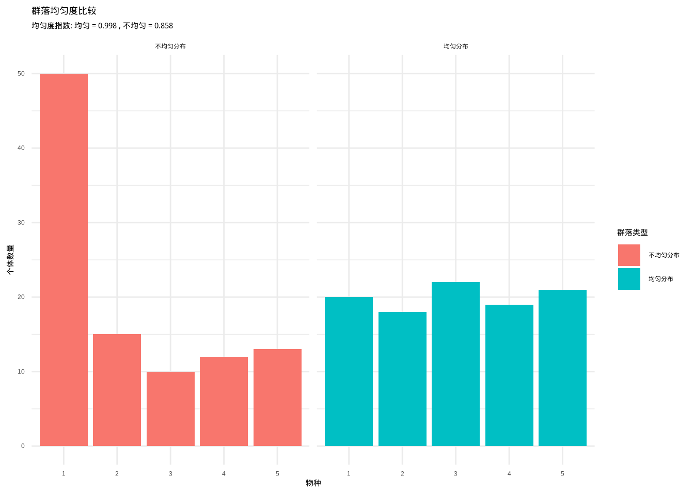

3 描述统计
3.1 引言
上一章我们探索了概率分布的奥秘，认识到要完整刻画一个随机变量的特征，最理想的方式是掌握其概率分布的全貌。然而在生态学研究的现实世界中，获取完整的概率分布信息往往如同捕捉风中的细沙——既困难又充满挑战。想象一下，我们要描绘一片原始森林中所有树木的高度分布，或是记录一个深邃湖泊中所有鱼类的体重分布，我们不可能逐一测量每一个生命个体。在这种现实约束下，描述统计便成为了我们解读生态系统密码的钥匙。
描述统计宛如生态学家的”数字望远镜”和”统计显微镜”，它赋予我们穿透复杂生态现象迷雾的能力，从纷繁的自然数据中提炼出关键特征，用精炼的数值语言来概括和描述我们观察到的生态模式。这些统计特征不仅是理解当前生态状况的窗口，更是我们进行科学比较、趋势预测和管理决策的基石。
让我们从一幅生动的生态画卷开始思考。假设你是一名野生动物保护工作者，正守护着一片保护区内的梅花鹿种群。你无法追踪每一只梅花鹿的足迹，但通过科学的抽样调查，你测量了50只梅花鹿的体重。这些体重数据如同散落的珍珠，呈现出怎样的分布特征呢？有些梅花鹿体态轻盈，体重约30公斤；有些则身姿矫健，体重可达60公斤以上；而大多数梅花鹿的体重则集中在40-50公斤之间。描述统计就是将这些观察转化为科学语言的魔法——均值揭示种群的平均体重水平，标准差展现个体间的体重差异程度，偏度描绘体重分布的对称性，峰度则暗示极端体重个体的出现频率。
再让我们潜入一个更为复杂的生态场景。你正研究一片湿地生态系统中不同水鸟物种的多样性。你无法记录每一只水鸟的每一次翩跹，但通过系统的定期调查，你获得了各个物种的观测频率。描述统计中的多样性指数（如Shannon-Wiener指数、Simpson指数）便将这些频率数据转化为对群落复杂性的量化描述。这些指数不仅告诉你这片湿地栖息着多少种水鸟，更重要的是揭示了物种相对多度分布的均衡性——是少数优势物种主导的寡头格局，还是各个物种相对均匀分布的民主格局？这种信息对于评估生态系统的健康状况和制定精准的保护策略具有决定性意义。
描述统计在生态学中的应用如同繁星点点，遍布各个研究领域。当你探究气候变化对植物物候的影响时，你需要描述开花时间的年际波动；当你分析污染物在食物链中的富集过程时，你需要刻画不同营养级生物体内污染物的浓度分布；当你评估生态恢复项目的成效时，你需要量化恢复前后关键生态指标的变化轨迹。在这些多元情境下，描述统计提供的中心趋势、离散程度和分布形状等特征，构成了我们理解和沟通生态现象的共同语言。
更为重要的是，描述统计架起了观察数据与理论模型之间的桥梁。生态学理论往往预言特定的统计模式——竞争排斥理论预测物种多度分布应呈现特定的形态；岛屿生物地理学理论预示物种-面积关系应遵循幂律分布；生态位理论推演个体大小分布应符合特定的统计规律。通过描述统计，我们能够检验这些理论预言是否与观察数据相契合，从而推动生态学理论的演进与完善。
让我们深入思考一个具体的生态学谜题：为什么有些湖泊的鱼类群落比另一些更加稳定？描述统计为我们提供了破解这一谜题的钥匙。通过计算各个湖泊鱼类群落的多样性指数、均匀度指数，以及分析物种多度分布的形状特征，我们可能发现稳定性较高的群落往往具有更高的物种多样性、更均匀的物种多度分布，以及特定的多度分布模式。这些统计特征不仅描绘了群落的现状图景，更重要的是揭示了维持群落稳定性的深层机制。
在环境监测和生态风险评估的战场上，描述统计同样扮演着关键角色。想象你肩负着监测一条河流水质变化的使命。你定期测量水中的各种污染物浓度、pH值、溶解氧等关键指标。描述统计让你能够量化这些指标的正常波动范围（通过均值和标准差），识别异常值（通过极值和异常值检测），以及刻画长期变化趋势（通过时间序列分析）。当某个指标超出正常范围时，这些统计特征如同预警系统的哨兵，帮助你及时采取干预措施，守护生态安全。
对于生态学专业的学生而言，掌握描述统计不仅是完成学业的要求，更是培养科学思维方式的必经之路。生态学研究的对象往往是复杂、多变、充满不确定性的自然系统。描述统计教会我们如何在不确定性中寻找确定性，在复杂性中发现简单性，在变化中识别规律性。这种能力不仅对生态学研究至关重要，对任何需要处理复杂数据的领域都具有深远价值。
最后，让我们思考描述统计在生态学教育中的深层意义。当你学习描述统计时，你不仅仅是在掌握数学公式和计算方法，你是在学习如何用科学的语言描述自然界的韵律。均值、方差、偏度、峰度这些概念，都是生态学家用来理解和交流生态现象的工具箱。掌握这些工具，意味着你能够更准确地观察自然的脉动、更深刻地理解生态过程的机理、更有效地沟通科学发现的精髓。
在接下来的章节中，我们将系统地探索各种描述统计方法，从最基础的中心趋势测量到复杂的分布形状描述，从个体特征到群落结构，从空间异质性到时间动态。每一个统计量都有其独特的生态学意义和应用场景。通过学习这些方法，你将能够将原始的生态数据转化为有意义的科学信息，为你的生态学研究奠定坚实的统计基础。
3.2 描述统计基础
3.2.1 中心趋势测量
中心趋势测量帮助我们定位数据的”引力中心”，如同探寻一片森林中最具代表性的树木高度，或是识别一个湖泊中最典型的鱼类大小。这些统计量为我们提供了理解生态数据分布格局的关键锚点。
均值：
数学定义：对于一组观测值 \(x_1, x_2, \ldots, x_n\)，算术平均定义为：
\[\bar{x} = \frac{1}{n}\sum_{i=1}^{n}x_i\]
几何平均定义为：
\[G = \left(\prod_{i=1}^{n}x_i\right)^{\frac{1}{n}}\]
调和平均定义为：
\[H = \frac{n}{\sum_{i=1}^{n}\frac{1}{x_i}}\]
想象你正在研究一片温带森林中红松的胸径分布。你随机测量了100棵红松的胸径（单位：厘米），得到了以下数据：
# 模拟红松胸径数据 - 创建40棵红松的胸径观测值
# 这些数据模拟了森林中红松种群的实际胸径分布
pine_diameter <- c(
25, 28, 32, 35, 38, 40, 42, 45, 48, 50,
52, 55, 58, 60, 62, 65, 68, 70, 72, 75,
30, 33, 36, 39, 41, 43, 46, 49, 51, 53,
56, 59, 61, 63, 66, 69, 71, 73, 76, 78
)
# 计算算术平均 - 反映红松种群的平均胸径水平
mean_diameter <- mean(pine_diameter)
# 输出计算结果 - 显示红松胸径的算术平均值
print(paste("红松胸径的算术平均值：", round(mean_diameter, 2), "厘米"))## [1] "红松胸径的算术平均值： 52.83 厘米"算术平均告诉我们这片森林中红松的平均胸径约为51.5厘米。在图形上，均值对应于分布曲线的重心位置。如果我们绘制胸径的直方图，均值线会穿过分布的中心区域。
几何平均特别适用于分析增长率数据。假设你研究一个湖泊中浮游植物生物量的年增长率：
# 浮游植物年增长率数据 - 模拟5年的增长率观测值
# 1.05表示5%增长，1.08表示8%增长，以此类推
growth_rates <- c(1.05, 1.08, 1.12, 0.95, 1.15)
# 计算几何平均 - 适用于增长率数据的中心趋势度量
# 使用连乘积和样本量计算几何平均
geometric_mean <- prod(growth_rates)^(1 / length(growth_rates))
# 输出几何平均值 - 反映浮游植物年增长率的平均水平
print(paste("浮游植物年增长率的几何平均值：", round(geometric_mean, 3)))## [1] "浮游植物年增长率的几何平均值： 1.068"调和平均适用于速率数据，比如研究鸟类在不同生境中的飞行速度：
# 鸟类在不同生境中的飞行速度数据 - 单位：米/秒
# 模拟5种不同生境中鸟类的典型飞行速度
flight_speeds <- c(8, 12, 15, 10, 9)
# 计算调和平均 - 适用于速率类数据的中心趋势度量
# 使用样本量和速度倒数和计算调和平均
harmonic_mean <- length(flight_speeds) / sum(1 / flight_speeds)
# 输出调和平均值 - 反映鸟类飞行速度的典型水平
print(paste("鸟类飞行速度的调和平均值：", round(harmonic_mean, 2), "米/秒"))## [1] "鸟类飞行速度的调和平均值： 10.29 米/秒"中位数：
数学定义：对于一组排序后的观测值 \(x_{(1)} \leq x_{(2)} \leq \cdots \leq x_{(n)}\)，中位数定义为：
\[\text{Median} = \begin{cases} x_{(\frac{n+1}{2})} & \text{如果 } n \text{ 是奇数} \\ \frac{x_{(\frac{n}{2})} + x_{(\frac{n}{2}+1)}}{2} & \text{如果 } n \text{ 是偶数} \end{cases}\]
中位数对异常值不敏感，在生态学中特别有用。考虑一个受污染的河流中鱼类体内重金属含量的研究：
# 鱼类体内汞含量数据 - 单位：微克/克
# 模拟10条鱼类的汞含量观测值，包含一个异常高值(2.50)
mercury_content <- c(0.12, 0.15, 0.18, 0.21, 0.25, 0.28, 0.32, 0.35, 0.38, 2.50)
# 计算中位数 - 对异常值不敏感的中心趋势度量
median_mercury <- median(mercury_content)
# 计算算术平均 - 对异常值敏感的中心趋势度量
mean_mercury <- mean(mercury_content)
# 输出中位数结果 - 反映大多数鱼类的真实汞含量水平
print(paste("鱼类汞含量的中位数：", round(median_mercury, 2), "微克/克"))## [1] "鱼类汞含量的中位数： 0.26 微克/克"## [1] "鱼类汞含量的平均值： 0.47 微克/克"在这个例子中，由于一个异常高值（2.50微克/克）的存在，均值（0.47微克/克）被严重拉高，而中位数（0.27微克/克）更能代表大多数鱼类的真实汞含量水平。在图形上，中位数将分布分成面积相等的两部分。
众数：
数学定义：对于一组观测值，众数是出现频率最高的值。对于连续数据，众数对应于概率密度函数的最大值点：
\[\text{Mode} = \arg\max_{x} f(x)\]
其中 \(f(x)\) 是概率密度函数。
众数告诉我们数据中最常见的值。在研究鸟类群落时，我们可能对不同物种的出现频率感兴趣：
# 不同鸟类物种在样方中的出现次数数据
# 模拟9个样方中观察到的鸟类物种记录
bird_species <- c("麻雀", "乌鸦", "麻雀", "鸽子", "麻雀", "乌鸦", "麻雀", "鸽子", "麻雀")
# 定义众数计算函数 - 用于分类数据的中心趋势度量
get_mode <- function(x) {
# 获取唯一值
ux <- unique(x)
# 计算每个唯一值的频数
# 返回出现频率最高的值
ux[which.max(tabulate(match(x, ux)))]
}
# 计算众数 - 反映数据中出现频率最高的鸟类物种
mode_species <- get_mode(bird_species)
# 输出众数结果 - 显示最常见的鸟类物种
print(paste("最常见的鸟类物种：", mode_species))## [1] "最常见的鸟类物种： 麻雀"在连续数据的直方图中，众数对应于最高的柱子，表示出现频率最高的数值区间。
3.2.2 离散性测量
离散性测量告诉我们数据在中心值周围的分散程度，就像描述一片森林中树木高度的整齐程度，或者一个湖泊中鱼类大小的变异范围。这些统计量帮助我们理解生态系统的异质性和稳定性。
方差与标准差：
数学定义：对于一组观测值 \(x_1, x_2, \ldots, x_n\)，样本方差定义为：
\[s^2 = \frac{1}{n-1}\sum_{i=1}^{n}(x_i - \bar{x})^2\]
样本标准差是方差的平方根：
\[s = \sqrt{s^2} = \sqrt{\frac{1}{n-1}\sum_{i=1}^{n}(x_i - \bar{x})^2}\]
方差和标准差量化了数据点相对于均值的平均偏离程度。考虑研究两个不同湖泊中鲤鱼体长的变异：
# 湖泊A和湖泊B中鲤鱼体长数据 - 单位：厘米
# 模拟两个湖泊中各10条鲤鱼的体长观测值
lake_a_lengths <- c(25, 26, 27, 28, 29, 30, 31, 32, 33, 34)
lake_b_lengths <- c(20, 22, 25, 28, 30, 32, 35, 38, 40, 45)
# 计算湖泊A鲤鱼的方差和标准差
var_a <- var(lake_a_lengths) # 方差：个体间差异的平方和
sd_a <- sd(lake_a_lengths) # 标准差：方差的平方根
# 计算湖泊B鲤鱼的方差和标准差
var_b <- var(lake_b_lengths) # 方差：个体间差异的平方和
sd_b <- sd(lake_b_lengths) # 标准差：方差的平方根## 湖泊A鲤鱼体长方差：9.17
## 湖泊A鲤鱼体长标准差：3.03厘米
## 湖泊B鲤鱼体长方差：65.39
## 湖泊B鲤鱼体长标准差：8.09厘米湖泊A的鲤鱼体长标准差较小（约2.87厘米），说明个体间差异较小，种群相对均质；而湖泊B的标准差较大（约7.72厘米），表明个体间差异较大，种群异质性更高。在图形上，标准差较小的分布更加”瘦高”，而标准差较大的分布更加”矮胖”。
变异系数：
数学定义：变异系数定义为标准差与均值的比值，通常以百分比表示：
\[CV = \frac{s}{\bar{x}} \times 100\%\]
变异系数允许我们比较不同量纲数据的相对变异程度。假设我们想比较不同物种的生长速率和体重的变异：
# 物种A和物种B的生长速率和成年体重数据
# 生长速率单位：厘米/年，成年体重单位：公斤
# 模拟两个物种各6个个体的观测值
growth_rate_a <- c(15, 16, 17, 18, 19, 20)
weight_a <- c(8, 9, 10, 11, 12, 13)
growth_rate_b <- c(25, 27, 29, 31, 33, 35)
weight_b <- c(15, 17, 19, 21, 23, 25)
# 定义变异系数计算函数 - 用于比较不同量纲数据的相对变异
cv <- function(x) {
# 变异系数 = 标准差 / 均值 × 100%
sd(x) / mean(x) * 100
}
# 计算物种A的生长速率和体重变异系数
cv_growth_a <- cv(growth_rate_a)
cv_weight_a <- cv(weight_a)
# 计算物种B的生长速率和体重变异系数
cv_growth_b <- cv(growth_rate_b)
cv_weight_b <- cv(weight_b)## 物种A生长速率变异系数：10.7%
## 物种A体重变异系数：17.8%
## 物种B生长速率变异系数：12.5%
## 物种B体重变异系数：18.7%变异系数以百分比形式表示相对变异，使我们能够比较生长速率（厘米/年）和体重（公斤）这两种不同量纲数据的变异程度。
标准误：
数学定义：标准误定义为样本标准差除以样本量的平方根：
\[SE = \frac{s}{\sqrt{n}}\]
其中 \(s\) 是样本标准差，\(n\) 是样本量。
标准误衡量样本统计量（如样本均值）的抽样变异性，反映了样本均值与总体均值之间的估计精度。在生态学研究中，当我们基于样本数据推断总体特征时，标准误提供了估计的不确定性度量。
考虑研究一片森林中树木高度的抽样调查：
# 模拟不同样本量下树木高度的标准误
# 设置随机数种子确保结果可重现
set.seed(123)
# 创建模拟总体数据 - 10000棵树木的高度
# 假设总体树木高度服从正态分布，均值为20米，标准差为5米
population_height <- rnorm(10000, mean = 20, sd = 5)
# 定义不同样本量水平 - 用于比较标准误的变化
sample_sizes <- c(10, 30, 50, 100)
# 初始化标准误向量 - 存储不同样本量对应的标准误
standard_errors <- numeric(length(sample_sizes))
# 循环计算不同样本量的标准误
for (i in 1:length(sample_sizes)) {
# 从总体中随机抽取指定样本量的数据
sample_data <- sample(population_height, sample_sizes[i])
# 计算标准误：标准差 / 样本量的平方根
standard_errors[i] <- sd(sample_data) / sqrt(sample_sizes[i])
}
# 创建结果数据框 - 展示样本量与标准误的关系
results <- data.frame(
样本量 = sample_sizes,
标准误 = round(standard_errors, 2)
)# 可视化标准误随样本量的变化
# 创建散点图展示标准误与样本量的关系
plot(sample_sizes, standard_errors,
type = "b", # 类型：点和线
xlab = "样本量", # x轴标签
ylab = "标准误", # y轴标签
main = "标准误随样本量的变化", # 图形标题
col = "blue", # 颜色：蓝色
lwd = 2, # 线宽：2
pch = 16 # 点形状：实心圆
)图3.1: 标准误随样本量的变化关系图。随着样本量的增加，标准误逐渐减小，表明更大的样本量能够提供更精确的总体均值估计。
标准误随着样本量的增加而减小，这意味着更大的样本量能够提供更精确的总体均值估计。在生态学研究中，标准误常用于构建置信区间：
# 计算树木高度的95%置信区间
# 从总体中随机抽取50个样本
sample_data <- sample(population_height, 50)
# 计算样本均值 - 总体均值的点估计
sample_mean <- mean(sample_data)
# 计算标准误 - 反映样本均值的估计精度
sample_se <- sd(sample_data) / sqrt(length(sample_data))
# 计算95%置信区间
# 使用正态分布临界值1.96构建置信区间
ci_lower <- sample_mean - 1.96 * sample_se # 置信区间下限
ci_upper <- sample_mean + 1.96 * sample_se # 置信区间上限## 样本均值：20.23米
## 标准误：0.76米
## 95%置信区间：[ 18.75, 21.71 ] 米与标准差的区别： - 标准差：描述样本内部个体间的变异程度 - 标准误：描述样本均值作为总体均值估计的精确程度
在生态学研究中，当我们关注个体间的差异时使用标准差，当我们关注总体参数的估计精度时使用标准误。
四分位距：
数学定义：四分位距定义为上四分位数（\(Q_3\)）与下四分位数（\(Q_1\)）之差：
\[IQR = Q_3 - Q_1\]
其中 \(Q_1\) 是第25百分位数，\(Q_3\) 是第75百分位数。
四分位距是描述数据中间50%范围的稳健度量，对异常值不敏感。在研究物种分布范围时特别有用：
# 某鸟类物种在不同样点的数量记录
bird_counts <- c(2, 3, 4, 5, 6, 7, 8, 9, 10, 50) # 包含一个异常高值
# 计算四分位距
q1 <- quantile(bird_counts, 0.25)
q3 <- quantile(bird_counts, 0.75)
iqr_value <- IQR(bird_counts)## 下四分位数(Q1)：4.25
## 上四分位数(Q3)：8.75
## 四分位距(IQR)：4.5# 识别异常值
lower_bound <- q1 - 1.5 * iqr_value
upper_bound <- q3 + 1.5 * iqr_value
outliers <- bird_counts[bird_counts < lower_bound | bird_counts > upper_bound]
print(paste("异常值：", outliers))## [1] "异常值： 50"在这个例子中，虽然有一个异常高值（50），但四分位距（4.5）仍然稳健地描述了大多数样点中该鸟类的典型数量范围。在箱线图中，四分位距对应于箱子的高度，异常值会显示为箱线图外的点。
3.2.3 分布形状与矩测量
分布形状测量描述了数据分布的对称性和尾部特征，帮助我们理解生态过程的潜在机制。就像识别不同树种的树冠形状一样，这些统计量揭示了生态数据背后的模式。
偏度：
数学定义：样本偏度定义为三阶中心矩与标准差立方的比值：
\[g_1 = \frac{\frac{1}{n}\sum_{i=1}^{n}(x_i - \bar{x})^3}{s^3}\]
其中 \(s\) 是样本标准差。偏度为正表示右偏，为负表示左偏，为零表示对称分布。
偏度量化了分布的不对称性。在生态学中，许多自然现象都表现出偏斜分布。考虑研究森林中树木胸径的分布：
# 安装并加载moments包（如果未安装）
# install.packages("moments")
library(moments)
# 模拟森林中树木胸径数据（右偏分布）
tree_diameter <- c(rep(10:20, 5), rep(21:30, 3), rep(31:40, 2), rep(41:50, 1))
# 计算偏度
skewness_value <- skewness(tree_diameter)
print(paste("树木胸径分布的偏度：", round(skewness_value, 2)))## [1] "树木胸径分布的偏度： 0.65"# 可视化分布
hist(tree_diameter,
breaks = 20, main = "树木胸径分布（右偏）",
xlab = "胸径（厘米）", col = "lightgreen", border = "darkgreen"
)
abline(v = mean(tree_diameter), col = "red", lwd = 2, lty = 2)
abline(v = median(tree_diameter), col = "blue", lwd = 2, lty = 2)
legend("topright",
legend = c("均值", "中位数"),
col = c("red", "blue"),
lty = 2, lwd = 2)图3.2: 树木胸径分布的直方图，展示右偏分布特征。红色虚线表示均值，蓝色虚线表示中位数，均值大于中位数表明分布向右偏斜。
正偏度（通常大于0.5）表明分布向右偏斜，意味着有较多的小树和少数大树。在图形上，右偏分布的右侧尾部较长，均值大于中位数。这种模式常见于年龄结构年轻的种群。
峰度：
数学定义：样本峰度定义为四阶中心矩与标准差四次方的比值：
\[g_2 = \frac{\frac{1}{n}\sum_{i=1}^{n}(x_i - \bar{x})^4}{s^4} - 3\]
其中减去3是为了使正态分布的峰度为0。峰度大于0表示尖峰分布，小于0表示平峰分布。
峰度描述了分布的尖峰程度和尾部厚度。在研究极端生态事件时特别重要：
# 模拟两种不同的物种多度分布
# 分布A：尖峰分布（高峰度）
abundance_a <- c(rep(10, 8), rep(15, 2), rep(20, 25), rep(25, 2), rep(30, 8))
# 分布B：平峰分布（低峰度）
abundance_b <- runif(45, 10, 30)
# 计算峰度
kurtosis_a <- kurtosis(abundance_a)
kurtosis_b <- kurtosis(abundance_b)## 物种A多度分布的峰度：2.53
## 物种B多度分布的峰度：2.06## 物种A相对于正态分布的峰度：-0.47
## 物种B相对于正态分布的峰度：-0.94高峰度（大于3）表明分布更加尖峰，数据集中在均值附近，尾部较厚，意味着极端值（稀有物种）的出现概率较高。低峰度（小于3）表明分布更加平缓，数据分散，极端值较少。
矩的概念：
数学定义：对于一组观测值 \(x_1, x_2, \ldots, x_n\)，第 \(k\) 阶样本矩定义为：
\[m_k = \frac{1}{n}\sum_{i=1}^{n}(x_i - \bar{x})^k\]
- 一阶矩（\(k=1\)）：均值，描述分布中心位置
- 二阶矩（\(k=2\)）：方差，描述分布离散程度
- 三阶矩（\(k=3\)）：偏度，描述分布不对称性
- 四阶矩（\(k=4\)）：峰度，描述分布尖峰程度
矩提供了描述分布特征的系统框架。让我们用一个完整的例子来展示四个主要矩：
# 研究湿地中不同水鸟物种的个体数量
waterbird_counts <- c(2, 3, 4, 5, 6, 7, 8, 9, 10, 12, 15, 20, 25, 35, 50)
# 计算四个主要矩
mean_count <- mean(waterbird_counts) # 一阶矩：均值
variance_count <- var(waterbird_counts) # 二阶矩：方差
skewness_count <- skewness(waterbird_counts) # 三阶矩：偏度
kurtosis_count <- kurtosis(waterbird_counts) # 四阶矩：峰度## 一阶矩（均值）：14.07
## 二阶矩（方差）：181.07
## 三阶矩（偏度）：1.54
## 四阶矩（峰度）：4.52##
## 水鸟物种个体数量分布特征：
## - 平均每个物种有14.1个个体
## - 个体数量变异较大（方差=181.1）## - 分布右偏，表明少数物种具有大量个体## - 分布尖峰，表明极端多度物种出现概率较高这四个矩共同描述了水鸟物种多度分布的整体特征：均值告诉我们典型的多度水平，方差描述多度的变异程度，偏度揭示分布的对称性，峰度反映极端多度物种的出现概率。
在生态学研究中，理解这些分布形状特征至关重要。例如，右偏的物种多度分布通常表明群落由少数优势物种和多数稀有物种组成；高峰度的环境因子分布可能预示着极端气候事件的发生；偏斜的个体大小分布可能反映了种内竞争或资源分配的不均等性。通过矩分析，我们能够从简单的数值描述深入到对生态过程的理解。
3.2.4 统计概念在概率分布图上的可视化
为了更好地理解这些统计概念，让我们在一个典型的概率分布图上可视化它们：
# 创建一个综合的可视化，展示所有统计概念
library(ggplot2)
library(gridExtra)
# 生成正态分布数据
set.seed(123)
x <- seq(-4, 4, length.out = 1000)
y <- dnorm(x)
# 创建基础分布图
base_plot <- ggplot(data.frame(x = x, y = y), aes(x = x, y = y)) +
geom_line(color = "blue", linewidth = 1) +
labs(
title = "统计概念在正态分布上的可视化",
x = "变量值", y = "概率密度"
) +
theme_minimal()
# 添加均值线
mean_plot <- base_plot +
geom_vline(xintercept = 0, color = "red",
linewidth = 1, linetype = "solid") +
annotate("text", x = 0, y = max(y) * 0.9,
label = "均值", color = "red", vjust = -1)
# 添加标准差范围
sd_plot <- mean_plot +
geom_vline(xintercept = c(-1, 1), color = "orange",
linewidth = 0.8, linetype = "dashed") +
annotate("text", x = -1, y = max(y) * 0.8,
label = "-1σ", color = "orange", vjust = -1) +
annotate("text", x = 1, y = max(y) * 0.8,
label = "+1σ", color = "orange", vjust = -1) +
geom_segment(aes(x = -1, y = 0.1, xend = 1, yend = 0.1),
color = "green", linewidth = 2, arrow = arrow(ends = "both")
) +
annotate("text", x = 0, y = 0.15, label = "标准差范围", color = "green")
# 显示图形
print(sd_plot)图3.3: 统计概念在正态分布上的可视化。红色垂直线表示均值，橙色虚线表示±1个标准差的范围，绿色箭头表示标准差的实际跨度。
这个可视化展示了： - 红色垂直线：均值（分布的中心位置） - 橙色虚线：±1个标准差的范围 - 绿色箭头：标准差的实际跨度
3.2.5 标准误的可视化理解
为了理解标准误的概念，让我们通过抽样模拟来展示标准误的意义：
# 标准误的可视化：抽样变异性
set.seed(456)
# 假设总体服从正态分布
population <- rnorm(10000, mean = 50, sd = 10)
# 进行多次抽样
n_samples <- 100
sample_size <- 30
sample_means <- numeric(n_samples)
sample_ses <- numeric(n_samples)
for (i in 1:n_samples) {
sample_data <- sample(population, sample_size)
sample_means[i] <- mean(sample_data)
sample_ses[i] <- sd(sample_data) / sqrt(sample_size)
}
# 创建可视化
par(mfrow = c(1, 2))
# 左图：样本均值的分布
hist(sample_means,
breaks = 20, col = "lightblue", border = "darkblue",
main = "样本均值的分布", xlab = "样本均值", ylab = "频率"
)
abline(v = mean(population), col = "red", lwd = 3, lty = 2)
legend("topright", legend = "总体均值", col = "red", lwd = 3, lty = 2)
# 右图：标准误与样本均值的关系
plot(sample_means, sample_ses,
pch = 16, col = "darkgreen",
xlab = "样本均值", ylab = "标准误",
main = "标准误与样本均值的关系"
)
abline(h = mean(sample_ses), col = "orange", lwd = 2, lty = 2)
legend("topright", legend = "平均标准误", col = "orange", lwd = 2, lty = 2)图3.4: 标准误的可视化分析。左图显示样本均值的分布，右图展示标准误与样本均值的关系。红色虚线表示总体均值，橙色虚线表示平均标准误。
# 添加置信区间示例
sample_mean <- mean(sample_means)
sample_se <- sd(sample_means)
ci_lower <- sample_mean - 1.96 * sample_se
ci_upper <- sample_mean + 1.96 * sample_se## 总体均值：50.16
## 样本均值的均值：50.17
## 样本均值的标准误：2.04
## 95%置信区间：[ 46.17, 54.17 ]这个可视化帮助我们理解： - 左图：多次抽样的样本均值围绕总体均值波动，其分布的标准差就是标准误 - 右图：标准误反映了样本均值作为总体均值估计的精确程度 - 置信区间：基于标准误构建的区间包含了总体均值的概率为95%
3.2.6 不同参数值的分布形状比较
现在让我们比较不同统计参数值对应的分布形状：
# 比较不同均值的分布
x_range <- seq(-5, 10, length.out = 1000)
df_means <- data.frame(
x = rep(x_range, 3),
y = c(dnorm(x_range, mean = 0),
dnorm(x_range, mean = 2),
dnorm(x_range, mean = 5)),
mean = factor(rep(c("均值=0", "均值=2", "均值=5"), each = 1000))
)
mean_comparison <- ggplot(df_means, aes(x = x, y = y, color = mean)) +
geom_line(linewidth = 1) +
labs(
title = "不同均值的分布比较",
x = "变量值", y = "概率密度", color = "均值"
) +
theme_minimal() +
scale_color_brewer(palette = "Set1")
# 比较不同标准差的分布
df_sds <- data.frame(
x = rep(x_range, 3),
y = c(dnorm(x_range, sd = 0.5),
dnorm(x_range, sd = 1),
dnorm(x_range, sd = 2)),
sd = factor(rep(c("标准差=0.5", "标准差=1", "标准差=2"), each = 1000))
)
sd_comparison <- ggplot(df_sds, aes(x = x, y = y, color = sd)) +
geom_line(linewidth = 1) +
labs(
title = "不同标准差的分布比较",
x = "变量值", y = "概率密度", color = "标准差"
) +
theme_minimal() +
scale_color_brewer(palette = "Set2")
# 比较不同偏度的分布（使用偏态分布）
library(sn)
x_skew <- seq(-3, 8, length.out = 1000)
df_skew <- data.frame(
x = rep(x_skew, 3),
y = c(dsn(x_skew, alpha = 0), dsn(x_skew, alpha = 2), dsn(x_skew, alpha = 5)),
skewness = factor(rep(c("偏度≈0", "偏度>0(右偏)", "偏度>>0(强右偏)"), each = 1000))
)
skew_comparison <- ggplot(df_skew, aes(x = x, y = y, color = skewness)) +
geom_line(linewidth = 1) +
labs(
title = "不同偏度的分布比较",
x = "变量值", y = "概率密度", color = "偏度"
) +
theme_minimal() +
scale_color_brewer(palette = "Set3")
# 比较不同峰度的分布（使用t分布）
df_kurtosis <- data.frame(
x = rep(x_range, 3),
y = c(dt(x_range, df = 30),
dt(x_range, df = 5),
dt(x_range, df = 2)),
kurtosis = factor(rep(c("峰度≈0", "峰度>0(尖峰)", "峰度>>0(强尖峰)"),
each = 1000))
)
kurtosis_comparison <- ggplot(df_kurtosis,
aes(x = x, y = y, color = kurtosis)) +
geom_line(linewidth = 1) +
labs(
title = "不同峰度的分布比较",
x = "变量值", y = "概率密度", color = "峰度"
) +
theme_minimal() +
scale_color_brewer(palette = "Set1")
# 显示所有比较图
grid.arrange(mean_comparison, sd_comparison,
skew_comparison, kurtosis_comparison, ncol = 2)图3.5: 不同统计参数值的分布形状比较。包括均值、标准差、偏度和峰度四个维度的分布特征对比，展示了统计参数对分布形状的影响。
3.2.7 生态学意义总结
通过这些可视化，我们可以清楚地看到：
均值的影响： - 大均值：分布整体向右移动，对应生态学中较大的个体大小、较高的生物量等 - 小均值：分布整体向左移动，对应较小的生态特征值
方差/标准差的影响： - 大方差：分布更加”矮胖”，数据分散，对应生态系统中个体间差异大、环境异质性高 - 小方差：分布更加”瘦高”，数据集中，对应均质的生态系统
偏度的影响： - 大正偏度：分布右偏，右侧尾部较长，对应生态学中少数个体具有极大值（如优势物种） - 大负偏度：分布左偏，左侧尾部较长，对应多数个体具有较小值 - 零偏度：对称分布，个体特征相对均匀
峰度的影响： - 高峰度：分布尖峰厚尾，数据集中在均值附近但极端值概率较高，对应生态系统中稳定状态但偶发极端事件 - 低峰度：分布平峰薄尾，数据分散，极端值较少，对应生态系统状态波动较大但无极端事件
标准误的意义： - 小标准误：样本均值作为总体均值的估计更加精确，对应生态学中基于大样本的可靠推断 - 大标准误：样本均值的估计不确定性较高，对应生态学中小样本研究的局限性
这些分布特征在生态学研究中具有重要的实际意义。例如： - 物种多度分布通常呈现右偏，反映了少数优势物种和多数稀有物种的格局 - 环境因子的分布可能呈现高峰度，预示着极端气候事件的发生概率 - 个体大小的分布偏度可以反映种内竞争强度 - 群落多样性的分布方差可以指示生态系统的稳定性 - 基于标准误的置信区间为生态参数的估计提供了不确定性度量
通过理解这些统计概念在概率分布图上的表现，生态学家能够更准确地解读生态数据背后的模式和过程。
3.3 环境异质性描述
3.3.1 环境异质性的概念
环境异质性是指环境因子在空间或时间上的变异程度，是生态系统中至关重要的结构特征。想象一片森林生态系统，如果土壤养分在整个区域均匀分布，我们就说环境异质性低；如果某些区域土壤肥沃，某些区域贫瘠，我们就说环境异质性高。这种异质性深刻影响着物种的分布、群落的构建和生态系统的功能。
从生态学角度来看，环境异质性可以分为空间异质性和时间异质性。空间异质性体现在环境因子在不同位置的差异，比如山坡上部和下部的温度差异、河流上游和下游的水质差异。时间异质性则体现在环境因子随时间的变化，比如季节性的温度波动、年际间的降水量变化。
高环境异质性通常意味着更多的生态位机会，能够支持更高的物种多样性。例如，一个具有复杂地形和多种土壤类型的区域，往往比平坦均质的区域拥有更多的植物物种。相反，低环境异质性的环境往往被少数适应能力强的物种所主导。
3.3.2 环境异质性的可视化理解
为了更好地理解环境异质性的概念，我们可以通过图示来展示不同异质性水平的环境格局：
图3.6: 环境异质性可视化分析。上图展示低环境异质性和高环境异质性的空间分布对比，下图通过箱线图比较两种异质性类型的土壤养分值分布。
在低环境异质性的情况下，环境因子值在空间上相对均匀，没有明显的梯度或斑块化格局。而在高环境异质性的情况下，环境因子值呈现出明显的空间结构，可能表现为梯度变化、斑块分布或复杂的空间格局。
3.3.3 环境异质性的量化方法
3.3.3.1 变异系数（Coefficient of Variation, CV）
变异系数是描述环境因子相对变异程度的最基本统计量。其数学定义为标准差与均值的比值乘以100%。变异系数的生态学意义在于它能够消除量纲的影响，使我们能够比较不同环境因子的变异程度。
在生态学研究中，变异系数被广泛应用于描述土壤养分、温度、湿度等环境因子的空间变异。例如，当我们研究一片森林中不同样方的土壤氮含量时，如果变异系数小于20%，说明土壤氮含量相对均质；如果变异系数大于40%，则表明土壤氮含量在空间上存在显著差异。这种变异模式可能反映了地形、植被覆盖或土壤形成过程的差异。
变异系数的优势在于计算简单、解释直观，但它无法提供关于变异空间结构的信息。因此，在需要深入了解环境异质性空间格局的研究中，通常需要结合其他更复杂的统计方法。
3.3.3.2 Moran’s I 空间自相关指数
Moran’s I 是量化环境因子空间自相关性的重要统计量，它衡量相邻位置环境因子值的相似程度。Moran’s I 的取值范围在-1到+1之间，正值表示空间正相关（相似值聚集），负值表示空间负相关（相异值聚集），接近零表示空间随机分布。
数学定义： \[I = \frac{n}{\sum_{i=1}^{n}\sum_{j=1}^{n}w_{ij}} \cdot \frac{\sum_{i=1}^{n}\sum_{j=1}^{n}w_{ij}(x_i - \bar{x})(x_j - \bar{x})}{\sum_{i=1}^{n}(x_i - \bar{x})^2}\]
其中： - \(n\) 为观测点数量 - \(x_i\) 为第 \(i\) 个位置的观测值 - \(\bar{x}\) 为所有观测值的均值 - \(w_{ij}\) 为空间权重矩阵元素
R代码实现：
# 示例数据：10个位置的温度观测值
temp_data <- c(15.2, 16.1, 15.8, 16.3, 15.9, 16.0, 15.7, 16.2, 15.6, 16.1)
coords <- data.frame(x = 1:10, y = rep(1, 10))
# 计算Moran's I
library(spdep)
nb <- spdep::knearneigh(as.matrix(coords), k = 2)
listw <- spdep::nb2listw(spdep::knn2nb(nb), style = "W")
moran_result <- spdep::moran.test(temp_data, listw)
cat("Moran's I:", round(moran_result$estimate[1], 3), "\n",
"p-value:", round(moran_result$p.value, 4), "\n",
sep = "")## Moran's I:-0.374
## p-value:0.8464在生态学应用中，Moran’s I 帮助我们理解环境因子的空间格局。例如，在研究山地温度分布时，如果 Moran’s I 显著为正，说明温度在空间上呈现聚集模式，即相邻位置的温度相似，这通常反映了海拔梯度的影响。相反，如果 Moran’s I 显著为负，则表明温度呈现棋盘状分布，相邻位置温度差异较大。
Moran’s I 的计算需要考虑空间权重矩阵，这反映了不同位置之间的空间关系。常用的权重矩阵包括邻接权重、距离权重和k近邻权重等。选择合适的权重矩阵对于准确估计空间自相关性至关重要。
3.3.3.3 环境异质性指数（Environmental Heterogeneity Index）
环境异质性指数是基于信息熵概念的环境异质性度量方法，它将环境因子按照类型进行分类，然后计算类型的多样性。其数学定义为各类型比例的对数加权和，与Shannon多样性指数的计算方式类似。
数学定义： \[H = -\sum_{i=1}^{S} p_i \ln(p_i)\]
其中： - \(S\) 为环境类型总数 - \(p_i\) 为第 \(i\) 种环境类型的面积比例
R代码实现：
# 示例数据：4种生境类型的面积比例
habitat_proportions <- c(0.4, 0.3, 0.2, 0.1) # 森林、草地、湿地、农田
# 计算环境异质性指数
heterogeneity_index <- -sum(habitat_proportions * log(habitat_proportions))
cat("环境异质性指数:", round(heterogeneity_index, 3), "\n")## 环境异质性指数: 1.28# 可视化不同类型的环境异质性
library(ggplot2)
habitat_data <- data.frame(
type = c("森林", "草地", "湿地", "农田"),
proportion = habitat_proportions
)
ggplot(habitat_data, aes(x = type, y = proportion, fill = type)) +
geom_col() +
labs(
title = "环境异质性组成",
subtitle = paste("异质性指数 =", round(heterogeneity_index, 3)),
x = "生境类型", y = "面积比例"
) +
theme_minimal()图3.7: 环境异质性组成柱状图。展示四种生境类型（森林、草地、湿地、农田）的面积比例分布，用于计算环境异质性指数。
这种方法的生态学意义在于它能够量化生境斑块类型的多样性。例如，在研究一个景观中的生境配置时，我们可以将景观划分为森林、草地、湿地、农田等不同类型，然后计算环境异质性指数。指数值越高，说明生境类型越多样，环境异质性越高。
环境异质性指数特别适用于描述分类环境因子的异质性，如土地利用类型、植被类型、土壤类型等。它能够捕捉到环境在类型组成上的复杂性，但不能反映同一类型内部的变异程度。
3.3.3.4 空间变异分解
空间变异分解是一种分析环境因子变异来源的方法，它将总变异分解为空间变异和随机变异两个部分。空间变异反映了环境因子的空间格局，而随机变异则包括了测量误差和小尺度随机波动。
数学定义： \[\text{总变异} = \text{空间变异} + \text{随机变异}\] \[\text{空间变异比例} = \frac{\text{空间变异}}{\text{总变异}} \times 100\%\]
R代码实现：
# 示例数据：土壤养分值的空间分布
soil_nutrient <- c(25, 28, 32, 35, 38, 40, 42, 45, 48, 50)
coordinates <- data.frame(x = 1:10, y = rep(1, 10))
# 计算总变异（方差）
total_variance <- var(soil_nutrient)
# 使用线性模型估计空间变异
spatial_model <- lm(soil_nutrient ~ coordinates$x)
spatial_variance <- var(predict(spatial_model))
random_variance <- var(residuals(spatial_model))
# 计算空间变异比例
spatial_proportion <- spatial_variance / total_variance * 100## 总变异:69.567
## 空间变异:69.094
## 随机变异:0.473
## 空间变异比例:99.3%# 可视化变异分解
library(ggplot2)
variance_data <- data.frame(
component = c("空间变异", "随机变异"),
value = c(spatial_variance, random_variance)
)
ggplot(variance_data, aes(x = "", y = value, fill = component)) +
geom_bar(stat = "identity", width = 1) +
coord_polar("y", start = 0) +
labs(
title = "空间变异分解",
subtitle = paste("空间变异比例 =", round(spatial_proportion, 1), "%")
) +
theme_void()图3.8: 空间变异分解饼图。展示土壤养分值的总变异中空间变异和随机变异的相对比例，用于分析环境异质性的形成机制。
在生态学研究中，空间变异分解帮助我们理解环境异质性的形成机制。如果空间变异占总变异的比例较高（如超过70%），说明环境因子具有强烈的空间格局，这种格局可能由地形、气候或其他空间过程所驱动。如果随机变异占主导，则表明环境因子的分布相对随机，缺乏明显的空间结构。
空间变异分解通常通过地统计学方法实现，如克里金插值或变异函数分析。这种方法不仅能够量化空间变异的相对重要性，还能够识别空间依赖的范围和方向，为理解生态过程的空间尺度提供重要信息。
3.3.3.5 分形维数（Fractal Dimension）
分形维数是基于分形几何理论的环境异质性度量方法，它量化环境表面的复杂程度和粗糙度。对于相对平滑的环境表面，分形维数较低（接近2）；而对于表面起伏非常大的复杂环境，分形维数较高（接近3）。
数学定义： 分形维数 \(D\) 可以通过盒计数法计算： \[D = \lim_{\epsilon \to 0} \frac{\log N(\epsilon)}{\log(1/\epsilon)}\]
其中： - \(\epsilon\) 为网格大小 - \(N(\epsilon)\) 为覆盖环境表面所需的大小为 \(\epsilon\) 的盒子数量
R代码实现：
# 盒计数法计算分形维数
calculate_fractal_dimension <- function(surface_matrix) {
sizes <- 2^(1:6) # 网格大小序列
counts <- numeric(length(sizes))
for (i in seq_along(sizes)) {
size <- sizes[i]
# 将表面划分为网格
grid_rows <- nrow(surface_matrix) %/% size
grid_cols <- ncol(surface_matrix) %/% size
grid <- matrix(0, nrow = grid_rows, ncol = grid_cols)
# 计算每个网格中是否有数据点
for (r in 1:grid_rows) {
for (c in 1:grid_cols) {
row_start <- (r - 1) * size + 1
row_end <- min(row_start + size - 1, nrow(surface_matrix))
col_start <- (c - 1) * size + 1
col_end <- min(col_start + size - 1, ncol(surface_matrix))
sub_matrix <- surface_matrix[row_start:row_end, col_start:col_end]
if (any(sub_matrix > 0)) {
grid[r, c] <- 1
}
}
}
counts[i] <- sum(grid)
}
# 线性回归估计分形维数
model <- lm(log(counts) ~ log(1 / sizes))
return(coef(model)[2])
}
# 示例：创建不同复杂程度的环境表面
set.seed(123)
# 平滑表面（低分形维数）
smooth_surface <- matrix(rnorm(64 * 64, mean = 50, sd = 5), 64, 64)
# 复杂表面（高分形维数）
complex_surface <- matrix(rnorm(64 * 64, mean = 50, sd = 20), 64, 64)
# 计算分形维数
fd_smooth <- calculate_fractal_dimension(smooth_surface)
fd_complex <- calculate_fractal_dimension(complex_surface)
cat("平滑表面的分形维数:", round(fd_smooth, 3), "\n")## 平滑表面的分形维数: 2## 复杂表面的分形维数: 2# 可视化两种表面
library(ggplot2)
library(reshape2)
# 创建可视化数据
smooth_df <- melt(smooth_surface[1:32, 1:32])
complex_df <- melt(complex_surface[1:32, 1:32])
p1 <- ggplot(smooth_df, aes(x = Var1, y = Var2, fill = value)) +
geom_tile() +
scale_fill_viridis_c() +
labs(
title = "平滑环境表面",
subtitle = paste("分形维数 =", round(fd_smooth, 3)),
x = "", y = ""
) +
theme_void()
p2 <- ggplot(complex_df, aes(x = Var1, y = Var2, fill = value)) +
geom_tile() +
scale_fill_viridis_c() +
labs(
title = "复杂环境表面",
subtitle = paste("分形维数 =", round(fd_complex, 3)),
x = "", y = ""
) +
theme_void()
library(patchwork)
p1 + p2图3.9: 不同复杂程度环境表面的分形维数可视化。左图展示平滑环境表面（低分形维数），右图展示复杂环境表面（高分形维数）。
在生态学研究中，分形维数帮助我们理解环境表面的结构复杂性。例如，在研究地形复杂度对物种分布的影响时，高分形维数的地形通常提供更多的微生境和生态位机会，从而支持更高的物种多样性。分形维数特别适用于描述连续环境因子的空间格局，如地形高程、植被覆盖度、土壤性质等。
3.4 个体特征描述
个体特征描述关注生物个体在生命周期中的存活和死亡模式，这些函数在生态学研究中对于理解种群动态、生存策略和死亡风险具有重要意义。
3.4.1 生存函数（Survival Function）
生存函数 \(S(t)\) 描述个体从出生到时间 \(t\) 仍然存活的概率，是存活分析中的核心概念。
数学定义： \[S(t) = P(T > t) = 1 - F(t)\]
其中： - \(T\) 为个体的存活时间（随机变量） - \(F(t)\) 为累积分布函数
R代码实现：
# 示例数据：鸟类个体的存活时间（天）
survival_times <- c(
45, 67, 89, 102, 120, 145, 167, 189, 210, 234,
56, 78, 95, 110, 128, 150, 172, 195, 218, 240
)
status <- rep(1, 20) # 1表示观测到死亡事件
# 使用Kaplan-Meier方法估计生存函数
library(survival)
fit <- survfit(Surv(survival_times, status) ~ 1)
# 绘制生存函数曲线
plot(fit,
main = "鸟类个体生存函数",
xlab = "时间（天）", ylab = "生存概率",
col = "blue", lwd = 2
)图3.10: 鸟类个体生存函数曲线。使用Kaplan-Meier方法估计的生存概率随时间变化曲线，蓝色曲线表示生存概率，可用于分析个体存活率和寿命分布。
## 中位生存时间: 136.5 天## 最大观测时间( 240 天)生存率: 0生态学意义： 生存函数在生态学中广泛应用于分析个体存活率、寿命分布和生存策略。例如，在标记重捕研究中，生存函数帮助我们估计野生动物种群的年存活率；在种群动态模型中，生存函数是预测种群增长的关键参数。不同物种的生存函数形态反映了其生活史策略的差异。
3.4.2 瞬时死亡风险函数（Hazard Function）
瞬时死亡风险函数 \(h(t)\) 描述在时间 \(t\) 仍然存活的个体在下一瞬间死亡的条件概率密度，反映了死亡风险的瞬时变化。
数学定义： \[h(t) = \lim_{\Delta t \to 0} \frac{P(t \leq T < t + \Delta t | T \geq t)}{\Delta t} = \frac{f(t)}{S(t)}\]
其中： - \(f(t)\) 为概率密度函数 - \(S(t)\) 为生存函数
R代码实现：
# 计算瞬时死亡风险函数
hazard_function <- function(time_points, fit) {
surv_summary <- summary(fit, times = time_points)
hazard <- -log(surv_summary$surv) / diff(c(0, time_points))
return(data.frame(time = time_points, hazard = hazard))
}
# 计算特定时间点的死亡风险
time_points <- seq(0, 250, by = 50)
hazard_data <- hazard_function(time_points, fit)
# 绘制死亡风险函数
library(ggplot2)
ggplot(hazard_data, aes(x = time, y = hazard)) +
geom_line(color = "red", size = 1) +
geom_point(color = "red", size = 2) +
labs(
title = "瞬时死亡风险函数",
x = "时间（天）", y = "死亡风险率"
) +
theme_minimal()图3.11: 瞬时死亡风险函数曲线。红色曲线表示在不同时间点仍然存活的个体在下一瞬间死亡的条件概率密度，反映了死亡风险的瞬时变化模式。
## 死亡风险随时间变化模式:## time hazard
## 1 0 NaN
## 2 50 0.001025866
## 3 100 0.007133499
## 4 150 0.018325815
## 5 200 0.032188758
## 6 250 0.000000000生态学意义： 瞬时死亡风险函数揭示了死亡风险的时间变化模式，对于理解年龄特异性死亡率具有重要意义。例如，在鸟类研究中，幼鸟的死亡风险通常较高，随后下降，到老年时再次上升，形成典型的”浴盆曲线”。这种模式反映了不同生命阶段的生存挑战和适应性策略。
3.4.3 累积风险函数（Cumulative Hazard Function）
累积风险函数 \(H(t)\) 描述个体从出生到时间 \(t\) 所经历的累积死亡风险，是生存函数对数的负值。
数学定义： \[H(t) = -\ln S(t) = \int_0^t h(u)du\]
其中： - \(h(u)\) 为瞬时死亡风险函数 - \(S(t)\) 为生存函数
R代码实现：
# 计算累积风险函数
cumulative_hazard <- function(time_points, fit) {
surv_summary <- summary(fit, times = time_points)
# 确保时间点和累积风险值长度一致
valid_times <- surv_summary$time
cum_hazard <- -log(surv_summary$surv)
return(data.frame(time = valid_times, cum_hazard = cum_hazard))
}
# 计算累积风险
cum_hazard_data <- cumulative_hazard(seq(0, 250, by = 25), fit)
# 绘制累积风险函数
ggplot(cum_hazard_data, aes(x = time, y = cum_hazard)) +
geom_line(color = "darkgreen", size = 1) +
geom_point(color = "darkgreen", size = 1.5) +
labs(
title = "累积风险函数",
x = "时间（天）", y = "累积死亡风险"
) +
theme_minimal()图3.12: 个体生存特征综合分析。左图：生存函数（蓝色）表示生存概率；中图：瞬时死亡风险函数（红色）表示死亡风险率；右图：累积风险函数（深绿色）表示累积死亡风险。
# 综合展示三个函数
library(patchwork)
# 创建综合图形
p1 <- ggplot(
data.frame(time = fit$time, surv = fit$surv),
aes(x = time, y = surv)
) +
geom_step(color = "blue", size = 1) +
labs(title = "生存函数", x = "时间", y = "生存概率") +
theme_minimal()
p2 <- ggplot(hazard_data, aes(x = time, y = hazard)) +
geom_line(color = "red", size = 1) +
geom_point(color = "red", size = 2) +
labs(title = "瞬时死亡风险", x = "时间", y = "风险率") +
theme_minimal()
p3 <- ggplot(cum_hazard_data, aes(x = time, y = cum_hazard)) +
geom_line(color = "darkgreen", size = 1) +
geom_point(color = "darkgreen", size = 1.5) +
labs(title = "累积风险", x = "时间", y = "累积风险") +
theme_minimal()
(p1 | p2 | p3) + plot_annotation(title = "个体生存特征综合分析")图3.13: 个体生存特征综合分析。左图：生存函数（蓝色）表示生存概率；中图：瞬时死亡风险函数（红色）表示死亡风险率；右图：累积风险函数（深绿色）表示累积死亡风险。
生态学意义： 累积风险函数综合评估个体在整个生命周期中的死亡风险积累，为理解种群生存压力提供整体视角。在保护生物学中，累积风险函数帮助评估濒危物种面临的生存威胁程度；在种群管理中，它为制定保护策略提供量化依据。高累积风险值表明种群面临严重的生存压力，需要采取干预措施。
3.5 种群特征描述
种群特征描述关注种群内个体间的资源分配和竞争关系，这些指标在生态学研究中对于理解种群结构、资源利用效率和种内竞争具有重要意义。种群作为生态系统的核心组成单元，其内部个体间的相互作用模式直接影响着种群的动态变化、适应能力和生态系统功能。在资源有限的环境中，个体间不可避免地存在着对光照、水分、养分和空间等关键资源的竞争，这种竞争强度及其导致的资源分配格局是种群生态学研究的核心内容。通过量化种群内个体大小的分布不均等性，我们可以深入理解种内竞争机制、资源捕获策略以及种群对环境变化的响应能力。例如，在森林生态系统中，树木个体对光照的竞争往往导致少数优势个体占据大部分资源，形成典型的层级结构；而在草地生态系统中，相对均等的资源分配可能反映了较为缓和的种内竞争。种群特征描述不仅帮助我们揭示种群的当前状态，还为预测种群未来发展趋势、制定合理的保护管理策略提供了科学依据。在现代生态学研究中，结合数学模型和统计方法对种群特征进行量化分析，已成为理解生物多样性维持机制、生态系统稳定性以及全球变化背景下种群适应性演化的重要途径。
3.5.1 Gini系数
Gini系数是衡量种群内个体大小或资源分配不均等性的重要指标，取值范围在0到1之间，值越大表示分配越不均等。
数学定义： \[G = \frac{\sum_{i=1}^{n}\sum_{j=1}^{n}|x_i - x_j|}{2n^2\bar{x}}\]
其中： - \(n\) 为种群个体数量 - \(x_i\) 为第 \(i\) 个个体的生物量或资源量 - \(\bar{x}\) 为个体大小的平均值
R代码实现：
# 示例数据：森林中树木的胸径（cm）
tree_diameters <- c(
15.2, 18.5, 22.1, 25.8, 28.3, 32.6, 35.9, 40.2,
45.7, 50.3, 12.8, 16.4, 19.7, 23.5, 27.9
)
# 计算Gini系数
calculate_gini <- function(x) {
n <- length(x)
x_sorted <- sort(x)
numerator <- sum((2 * 1:n - n - 1) * x_sorted)
denominator <- n * sum(x_sorted)
return(numerator / denominator)
}
gini_index <- calculate_gini(tree_diameters)
cat("树木胸径的Gini系数:", round(gini_index, 3), "\n")## 树木胸径的Gini系数: 0.222# 使用ineq包验证计算结果
library(ineq)
gini_ineq <- ineq::Gini(tree_diameters)
cat("使用ineq包计算的Gini系数:", round(gini_ineq, 3), "\n")## 使用ineq包计算的Gini系数: 0.222# 可视化个体大小分布
library(ggplot2)
tree_data <- data.frame(diameter = tree_diameters, rank = rank(tree_diameters))
ggplot(tree_data, aes(x = rank, y = diameter)) +
geom_point(size = 3, color = "blue", alpha = 0.7) +
geom_hline(yintercept = mean(tree_diameters),
linetype = "dashed", color = "red") +
labs(
title = "树木胸径分布",
subtitle = paste("Gini系数 =", round(gini_index, 3)),
x = "个体排序", y = "胸径 (cm)"
) +
theme_minimal()图3.14: 树木胸径分布图。蓝色点表示个体胸径值，红色虚线表示平均胸径，用于计算和可视化Gini系数，反映种群内个体大小的不均等性。
生态学意义： Gini系数在生态学中用于描述种群内个体竞争强度和资源分配公平性。例如，在森林生态系统中，高Gini系数表明少数大树占据了大部分资源，反映了强烈的种内竞争；低Gini系数则表明资源分配相对均等，个体间竞争较弱。Gini系数帮助我们理解种群的结构动态和资源利用模式。
3.5.2 Lorenz曲线
Lorenz曲线是可视化种群内个体大小分布不均等性的图形工具，通过累积个体大小与累积个体数量的关系曲线来展示资源分配模式。
数学定义： Lorenz曲线上的点 \((p, L(p))\) 表示： - \(p\)：累积个体比例（从小到大排序） - \(L(p)\)：对应个体累积的资源比例
R代码实现：
# 计算Lorenz曲线数据
calculate_lorenz <- function(x) {
x_sorted <- sort(x)
n <- length(x)
p <- (1:n) / n # 累积个体比例
L <- cumsum(x_sorted) / sum(x_sorted) # 累积资源比例
return(data.frame(p = p, L = L))
}
lorenz_data <- calculate_lorenz(tree_diameters)
# 绘制Lorenz曲线
ggplot(lorenz_data, aes(x = p, y = L)) +
geom_line(color = "darkgreen", size = 1.5) +
geom_abline(intercept = 0, slope = 1, linetype = "dashed", color = "gray") +
geom_polygon(
data = data.frame(x = c(0, lorenz_data$p, 1), y = c(0, lorenz_data$L, 0)),
aes(x = x, y = y), fill = "lightgreen", alpha = 0.3
) +
labs(
title = "Lorenz曲线",
subtitle = paste("Gini系数 =", round(gini_index, 3)),
x = "累积个体比例", y = "累积资源比例"
) +
theme_minimal() +
coord_equal()图3.15: Lorenz曲线图。深绿色曲线表示累积资源分配比例，灰色对角线表示完全均等分配，浅绿色区域表示基尼面积，用于可视化种群内资源分配的不均等性。
# 计算基尼面积（Lorenz曲线与对角线之间的面积）
gini_area <- 0.5 - sum(diff(lorenz_data$p) *
(lorenz_data$L[-1] +
lorenz_data$L[-nrow(lorenz_data)])) / 2
cat("基尼面积:", round(gini_area, 4), "\n")## 基尼面积: 0.1118生态学意义： Lorenz曲线直观地展示了种群内资源分配的不均等性。曲线越接近对角线，资源分配越均等；曲线越向下弯曲，资源分配越不均等。在生态学研究中，Lorenz曲线帮助我们可视化种内竞争格局，理解优势个体对资源的控制程度。
3.5.3 基尼系数的生态学应用
基尼系数在生态学研究中具有广泛的应用价值，主要体现在以下几个方面：
评估种内竞争强度：
# 比较不同种群的竞争强度
population_a <- c(12, 15, 18, 22, 25, 28, 32, 35, 40, 45) # 竞争较弱
population_b <- c(8, 10, 12, 15, 20, 30, 42, 55, 68, 80) # 竞争较强
gini_a <- calculate_gini(population_a)
gini_b <- calculate_gini(population_b)
cat("种群A的Gini系数:", round(gini_a, 3), "(竞争较弱)\n")## 种群A的Gini系数: 0.217 (竞争较弱)## 种群B的Gini系数: 0.4 (竞争较强)# 可视化比较
comparison_data <- rbind(
data.frame(population = "A", value = population_a),
data.frame(population = "B", value = population_b)
)
ggplot(comparison_data, aes(x = population, y = value, fill = population)) +
geom_boxplot(alpha = 0.7) +
geom_jitter(width = 0.2, size = 2, alpha = 0.6) +
labs(
title = "不同种群的个体大小分布比较",
subtitle = paste("Gini系数: A =", round(gini_a, 3),
", B =", round(gini_b, 3)),
x = "种群", y = "个体大小"
) +
theme_minimal()图3.16: 不同种群的个体大小分布比较。通过箱线图和散点图展示竞争强度不同的两个种群的个体大小分布，用于比较Gini系数和种内竞争格局。
分析资源利用效率： 高Gini系数的种群通常表明资源集中在少数个体手中，这可能反映了高效的资源捕获能力，但也可能导致种群稳定性下降。通过监测Gini系数的变化，可以评估种群对环境的适应性和资源利用策略的演化。
比较不同种群的个体大小分布模式：
# 模拟不同环境条件下的种群分布
set.seed(123)
resource_rich <- rnorm(50, mean = 30, sd = 5) # 资源丰富环境
resource_poor <- rnorm(50, mean = 20, sd = 8) # 资源贫乏环境
gini_rich <- calculate_gini(resource_rich)
gini_poor <- calculate_gini(resource_poor)
cat("资源丰富环境的Gini系数:", round(gini_rich, 3), "\n")## 资源丰富环境的Gini系数: 0.086## 资源贫乏环境的Gini系数: 0.189# 综合分析
efficiency_analysis <- data.frame(
环境条件 = c("资源丰富", "资源贫乏"),
Gini系数 = c(gini_rich, gini_poor),
平均大小 = c(mean(resource_rich), mean(resource_poor)),
变异系数 = c(
sd(resource_rich) / mean(resource_rich),
sd(resource_poor) / mean(resource_poor)
)
)
print("不同环境条件下的种群特征比较:")## [1] "不同环境条件下的种群特征比较:"## 环境条件 Gini系数 平均大小 变异系数
## 1 资源丰富 0.08611673 30.17202 0.1534319
## 2 资源贫乏 0.18922016 21.17127 0.3421419生态学意义总结： 基尼系数和Lorenz曲线为生态学家提供了量化种群内资源分配不均等性的工具。这些指标不仅帮助我们理解种内竞争机制，还为种群管理、保护生物学和生态系统功能研究提供了重要依据。通过分析不同环境条件下Gini系数的变化，我们可以深入理解种群对环境变化的响应策略和适应性演化。
3.6 群落特征描述
3.6.1 物种多样性描述
物种多样性是生态学研究的核心内容之一，它描述了生物群落在物种组成、数量分布和生态功能等方面的复杂程度。物种多样性不仅反映了生态系统的稳定性和恢复力，还为理解生物进化、群落构建机制和生态系统功能提供了重要依据。
3.6.1.1 Fisher’s α
Fisher’s α是基于对数级数分布的物种多样性度量方法，它在样本量变化时相对稳定，特别适用于比较不同采样强度的群落。
数学定义： Fisher’s α 通过对数级数分布拟合得到： \[S = \alpha \ln(1 + \frac{N}{\alpha})\]
其中： - \(S\) 为观测到的物种数 - \(N\) 为总个体数 - \(\alpha\) 为Fisher’s α 多样性指数
R代码实现：
# 示例数据：森林群落中不同树种的个体数量
species_abundance <- c(25, 18, 12, 8, 5) # 各树种的个体数量
# 计算Fisher's α
calculate_fisher_alpha <- function(abundance) {
S <- length(abundance) # 物种数
N <- sum(abundance) # 总个体数
# 使用迭代法求解Fisher's α
alpha_est <- 1
for (i in 1:20) {
f <- S - alpha_est * log(1 + N / alpha_est)
df <- -log(1 + N / alpha_est) +
alpha_est * (N / (alpha_est^2 + alpha_est * N))
alpha_est <- alpha_est - f / df
}
return(alpha_est)
}
fisher_alpha <- calculate_fisher_alpha(species_abundance)
cat("Fisher's α:", round(fisher_alpha, 3), "\n")## Fisher's α: 1.244# 使用vegan包验证计算结果
fisher_vegan <- vegan::fisher.alpha(species_abundance)
cat("使用vegan包计算的Fisher's α:", round(fisher_vegan, 3), "\n")## 使用vegan包计算的Fisher's α: 1.244# 计算Shannon-Wiener指数（用于比较）
calculate_shannon <- function(abundance) {
total <- sum(abundance)
p <- abundance / total
H <- -sum(p * log(p))
return(H)
}
# 分析样本量对多样性的影响
sample_sizes <- c(50, 100, 200, 500)
diversity_comparison <- data.frame(
样本量 = sample_sizes,
Shannon指数 = numeric(length(sample_sizes)),
Fisher_alpha = numeric(length(sample_sizes))
)
for (i in seq_along(sample_sizes)) {
# 模拟不同样本量的群落数据
simulated_abundance <- rpois(10, lambda = sample_sizes[i] / 10)
diversity_comparison$Shannon指数[i] <-
calculate_shannon(simulated_abundance)
diversity_comparison$Fisher_alpha[i] <-
calculate_fisher_alpha(simulated_abundance)
}| 样本量 | Shannon指数 | Fisher_alpha |
|---|---|---|
| 50 | 2.224785 | 3.843383 |
| 100 | 2.276299 | 2.681482 |
| 200 | 2.279418 | 2.215373 |
| 500 | 2.293935 | 1.758383 |
生态学意义： Fisher’s α在生态学研究中特别适用于比较不同采样强度或样本量的群落。由于其相对稳定性，Fisher’s α能够减少采样偏差对多样性评估的影响，为跨研究比较提供可靠依据。在生物多样性监测和保护区评估中，Fisher’s α是重要的参考指标。
3.6.1.2 Shannon-Wiener指数
Shannon-Wiener指数是基于信息熵概念的物种多样性度量方法，它综合反映了物种丰富度和均匀度，对稀有物种较为敏感。
数学定义： \[H' = -\sum_{i=1}^{S} p_i \ln(p_i)\]
其中： - \(S\) 为物种总数 - \(p_i\) 为第 \(i\) 个物种的相对多度
R代码实现：
# 示例数据：森林群落中不同树种的个体数量
tree_species <- c("橡树", "松树", "枫树", "桦树", "杉树")
# 计算Shannon-Wiener指数
calculate_shannon <- function(abundance) {
total <- sum(abundance)
p <- abundance / total
H <- -sum(p * log(p))
return(H)
}
shannon_index <- calculate_shannon(species_abundance)
cat("Shannon-Wiener指数:", round(shannon_index, 3), "\n")## Shannon-Wiener指数: 1.47# 使用vegan包验证计算结果
library(vegan)
shannon_vegan <- vegan::diversity(species_abundance, index = "shannon")
cat("使用vegan包计算的Shannon指数:", round(shannon_vegan, 3), "\n")## 使用vegan包计算的Shannon指数: 1.47# 可视化物种组成
library(ggplot2)
species_data <- data.frame(
species = tree_species,
abundance = species_abundance,
proportion = species_abundance / sum(species_abundance)
)
ggplot(species_data, aes(x = species, y = abundance, fill = species)) +
geom_col() +
labs(
title = "森林群落物种组成",
subtitle = paste("Shannon指数 =", round(shannon_index, 3)),
x = "树种", y = "个体数量"
) +
theme_minimal()图3.17: 森林群落物种组成柱状图。展示五种树种（橡树、松树、枫树、桦树、杉树）的个体数量分布，用于计算和可视化Shannon-Wiener多样性指数。
生态学意义： Shannon-Wiener指数在生态学中广泛应用于评估群落的物种多样性水平。较高的Shannon指数值表明群落具有较高的物种丰富度和均匀度，生态系统通常更加稳定和具有更强的恢复力。该指数对稀有物种较为敏感，能够较好地反映群落的保护价值和生态功能。
3.6.1.3 Simpson指数
Simpson指数是基于概率论的物种多样性度量方法，它表示随机抽取两个个体属于不同物种的概率，对优势物种较为敏感。
数学定义： \[D = 1 - \sum_{i=1}^{S} p_i^2\]
其中： - \(S\) 为物种总数 - \(p_i\) 为第 \(i\) 个物种的相对多度
R代码实现：
# 计算Simpson指数
calculate_simpson <- function(abundance) {
total <- sum(abundance)
p <- abundance / total
D <- 1 - sum(p^2)
return(D)
}
simpson_index <- calculate_simpson(species_abundance)
cat("Simpson指数:", round(simpson_index, 3), "\n")## Simpson指数: 0.744# 使用vegan包验证计算结果
simpson_vegan <- vegan::diversity(species_abundance, index = "simpson")
cat("使用vegan包计算的Simpson指数:", round(simpson_vegan, 3), "\n")## 使用vegan包计算的Simpson指数: 0.744# 比较不同群落的多样性
community_A <- c(30, 25, 20, 15, 10) # 多样性较高
community_B <- c(50, 20, 15, 10, 5) # 多样性较低
shannon_A <- calculate_shannon(community_A)
shannon_B <- calculate_shannon(community_B)
simpson_A <- calculate_simpson(community_A)
simpson_B <- calculate_simpson(community_B)
comparison_data <- data.frame(
群落 = c("A", "B"),
Shannon指数 = c(shannon_A, shannon_B),
Simpson指数 = c(simpson_A, simpson_B)
)| 群落 | Shannon指数 | Simpson指数 |
|---|---|---|
| A | 1.544480 | 0.775 |
| B | 1.333074 | 0.675 |
生态学意义： Simpson指数特别适用于分析群落中的优势物种格局。较低的Simpson指数值表明群落中存在明显的优势物种，这可能反映了强烈的竞争排斥或环境筛选作用。在生态监测和保护规划中，Simpson指数帮助我们识别需要特别关注的生态关键种和优势种。
3.6.1.4 Pielou均匀度指数
Pielou均匀度指数是独立于物种丰富度的均匀度度量方法，它反映了物种多度分布的均等程度。
数学定义： \[J' = \frac{H'}{H'_{max}} = \frac{H'}{\ln(S)}\]
其中： - \(H'\) 为观测的Shannon指数 - \(H'_{max}\) 为最大可能的Shannon指数（当所有物种多度相等时） - \(S\) 为物种总数
R代码实现：
# 计算Pielou均匀度指数
calculate_pielou <- function(abundance) {
H <- calculate_shannon(abundance)
S <- length(abundance)
J <- H / log(S)
return(J)
}
pielou_index <- calculate_pielou(species_abundance)
cat("Pielou均匀度指数:", round(pielou_index, 3), "\n")## Pielou均匀度指数: 0.913# 比较不同均匀度的群落
even_community <- c(20, 18, 22, 19, 21) # 均匀分布
uneven_community <- c(50, 15, 10, 12, 13) # 不均匀分布
pielou_even <- calculate_pielou(even_community)
pielou_uneven <- calculate_pielou(uneven_community)
# 可视化均匀度比较
uniformity_data <- rbind(
data.frame(群落类型 = "均匀分布", 物种 = 1:5, 多度 = even_community),
data.frame(群落类型 = "不均匀分布", 物种 = 1:5, 多度 = uneven_community)
)
ggplot(uniformity_data, aes(x = factor(物种), y = 多度, fill = 群落类型)) +
geom_col(position = "dodge") +
labs(
title = "群落均匀度比较",
subtitle = paste(
"均匀度指数: 均匀 =", round(pielou_even, 3),
", 不均匀 =", round(pielou_uneven, 3)
),
x = "物种", y = "个体数量"
) +
theme_minimal() +
facet_wrap(~群落类型, ncol = 2)
# 综合多样性分析
diversity_summary <- data.frame(
指数类型 = c("Shannon-Wiener", "Simpson", "Fisher's α", "Pielou均匀度"),
数值 = c(shannon_index, simpson_index, fisher_alpha, pielou_index),
解释 = c("综合多样性", "优势度敏感性", "样本稳定性", "均匀度度量")
)| 指数类型 | 数值 | 解释 |
|---|---|---|
| Shannon-Wiener | 1.4695049 | 综合多样性 |
| Simpson | 0.7443772 | 优势度敏感性 |
| Fisher’s α | 1.2439951 | 样本稳定性 |
| Pielou均匀度 | 0.9130547 | 均匀度度量 |
生态学意义： Pielou均匀度指数在生态学中用于独立评估物种多度分布的均等程度，不受物种丰富度的影响。高均匀度指数表明群落中资源分配相对均等，种间竞争可能较为缓和；低均匀度指数则反映了明显的优势种格局和强烈的种间竞争。均匀度指数为理解群落构建机制和生态位分化提供了重要信息。
3.7 生态网络特征描述
生态网络特征描述关注物种间相互作用的拓扑结构和功能关系，这些指标在生态学研究中对于理解群落稳定性、能量流动和生态系统功能具有重要意义。生态网络分析将生物群落视为复杂的网络系统，其中物种作为节点，它们之间的相互作用作为边，通过图论方法揭示生态系统的组织规律和动态特征。
生态网络分析是现代生态学的重要分支，它将传统的物种-环境关系研究扩展到物种-物种相互作用的网络层面。这种分析方法不仅关注单个物种的生态特征，更注重物种间相互作用的整体格局和结构特征。在生态网络中，每个物种都不是孤立存在的，而是通过捕食、竞争、互利共生等多种关系与其他物种紧密相连，形成一个复杂的相互作用网络。这种网络结构直接影响着生态系统的稳定性、恢复力和功能表现。
生态网络分析的核心在于揭示物种间相互作用的拓扑特征，包括连接度、模块性、嵌套性等关键指标。连接度反映了网络中物种间相互作用的密集程度，高连接度通常意味着更强的功能冗余和系统稳定性；模块性描述了网络内部群落结构的明显程度，高模块性表明系统可以划分为相对独立的子群落，这有助于缓冲局部干扰对整个系统的影响；嵌套性则揭示了特化物种与泛化物种的连接模式，高嵌套性表明系统具有层级结构，特化物种的生存依赖于泛化物种的存在。
在食物网分析中，生态网络特征描述进一步扩展到能量流动和营养关系的结构特征。食物链长度反映了能量在生态系统中的传递效率，较长的食物链通常意味着更高的能量利用效率，但也可能增加系统的不稳定性；连接复杂性则衡量了物种间捕食关系的密集程度，较高的连接复杂性与更强的系统稳定性和功能冗余相关。通过分析这些特征，我们可以深入理解生态系统中能量流动的路径、营养级的构成以及物种间的营养关系。
生态网络分析的应用范围十分广泛，涵盖了植物-传粉者网络、宿主-寄生者网络、竞争网络等多种生态相互作用类型。例如，在植物-传粉者网络中，网络结构特征直接影响着植物的繁殖成功率和传粉者的资源获取；在食物网中，网络拓扑特征决定了能量流动的效率和系统的稳定性。这些网络特征不仅反映了当前的生态状态，还能够预测生态系统对环境变化的响应和适应能力。
随着计算生态学的发展，生态网络分析的方法和技术不断进步。现代生态网络研究结合了图论、复杂系统理论和统计物理学等多个学科的理论和方法，为理解生态系统的复杂性和动态性提供了强有力的工具。通过量化分析生态网络的结构特征，我们可以更好地预测生物多样性的维持机制、生态系统的稳定性阈值以及对全球变化的响应模式。
在保护生物学和生态系统管理中，生态网络特征描述具有重要的实践价值。通过识别网络中的关键物种和脆弱环节，我们可以制定更有针对性的保护策略；通过分析网络结构的变化，我们可以监测生态系统的健康状况和恢复进程。生态网络分析为生物多样性保护、生态系统修复和可持续发展提供了科学依据，是现代生态学研究不可或缺的重要组成部分。
3.7.1 网络拓扑指标
网络拓扑指标描述了生态网络的结构特征，包括连接模式、模块组织和嵌套格局等，这些特征直接影响生态系统的稳定性和功能。网络拓扑分析是生态网络研究的核心内容，它通过量化网络的结构特征来揭示物种间相互作用的组织规律和生态系统的功能特性。拓扑指标不仅反映了当前的生态状态，还能够预测生态系统对环境变化的响应能力和恢复潜力。
连接度（Connectance）： 连接度是生态网络分析中最基础的拓扑指标之一，它衡量网络中实际连接数与可能连接数的比例，反映了物种间相互作用的密集程度。连接度的取值范围在0到1之间，值越大表明网络中物种间的相互作用越密集。
数学定义： \[C = \frac{L}{S(S-1)}\]
其中： - \(L\) 为网络中实际存在的连接数 - \(S\) 为物种总数
连接度的生态学意义十分深远。高连接度通常意味着生态系统具有更强的功能冗余和系统稳定性。在这种网络中，物种间存在大量的相互作用关系，当一个物种消失或数量减少时，其他物种可以通过替代性的相互作用来维持生态系统的功能。例如，在植物-传粉者网络中，高连接度表明传粉者具有多样化的食物来源，植物也具有多样化的传粉者，这种冗余性增强了系统对物种丧失的抵抗能力。然而，过高的连接度也可能带来负面影响，如增加疾病传播的风险或强化种间竞争。连接度的研究帮助我们理解生态系统的复杂性和稳定性之间的平衡关系。
模块性（Modularity）： 模块性是衡量网络中群落结构明显程度的重要指标，它量化了网络可以划分为相对独立子群落的能力。高模块性表明网络中存在明显的模块结构，物种在模块内部的相互作用强度远大于模块之间的相互作用。
数学定义： \[Q = \frac{1}{2m} \sum_{ij} \left[ A_{ij} - \frac{k_i k_j}{2m} \right] \delta(c_i, c_j)\]
其中： - \(A_{ij}\) 为邻接矩阵元素 - \(k_i\) 为节点 \(i\) 的度 - \(m\) 为总连接数 - \(\delta(c_i, c_j)\) 为节点所属模块指示函数
模块性在生态学中具有重要的功能意义。高模块性的生态系统通常具有较强的抗干扰能力，因为局部的干扰可以被限制在特定的模块内，而不会迅速扩散到整个网络。例如，在珊瑚礁生态系统中，不同的珊瑚礁斑块可能形成相对独立的模块，当一个斑块受到环境压力时，其他斑块可以维持正常的生态功能。模块性还反映了生态位的分化和资源利用的专业化程度。在高度模块化的网络中，物种往往在特定的生态位中特化，形成相对独立的生态功能单元。模块性分析为理解生态系统的空间结构和功能分区提供了重要工具。
嵌套性（Nestedness）： 嵌套性是描述特化物种与泛化物种连接模式的关键指标，它反映了网络中物种相互作用的层级结构。高嵌套性表明特化物种的相互作用伙伴是泛化物种相互作用伙伴的子集，形成一种”俄罗斯套娃”式的结构模式。
数学定义： 最常用的嵌套性度量是NODF（Nestedness metric based on Overlap and Decreasing Fill），其数学定义为：
对于行嵌套（物种作为行）： \[NODF_{rows} = \frac{2}{S(S-1)} \sum_{i<j} \frac{O_{ij}}{\min(k_i, k_j)}\]
对于列嵌套（物种作为列）： \[NODF_{cols} = \frac{2}{T(T-1)} \sum_{i<j} \frac{O_{ij}}{\min(k_i, k_j)}\]
总体嵌套性： \[NODF = \frac{NODF_{rows} + NODF_{cols}}{2}\]
其中： - \(S\) 为行物种数（如植物） - \(T\) 为列物种数（如传粉者） - \(O_{ij}\) 为物种对 \(i\) 和 \(j\) 的共同相互作用数 - \(k_i, k_j\) 为物种 \(i\) 和 \(j\) 的度（相互作用数）
另一种常用的嵌套性度量是温度度量（Temperature metric），基于完美嵌套矩阵与实际矩阵的差异： \[T = \frac{\sum_{i,j} |a_{ij} - p_{ij}|}{S \times T}\]
其中： - \(a_{ij}\) 为实际相互作用矩阵 - \(p_{ij}\) 为完美嵌套矩阵
嵌套性的生态学意义在于它揭示了物种共存和资源利用的策略。在高度嵌套的网络中，泛化物种与许多其他物种相互作用，而特化物种只与部分泛化物种相互作用。这种结构模式有助于维持生态系统的稳定性，因为泛化物种可以作为”枢纽”物种，连接不同的功能单元。当环境发生变化时，泛化物种能够维持基本的生态功能，为特化物种提供生存基础。嵌套性结构还反映了生态位分化的程度和物种间相互作用的组织规律。
嵌套性的计算方法有多种，其中最常用的是NODF（Nestedness metric based on Overlap and Decreasing Fill）方法。NODF通过比较物种对的相互作用模式来量化网络的嵌套程度，考虑了行嵌套和列嵌套两个维度。高NODF值表明网络具有明显的嵌套结构，物种间的相互作用呈现出清晰的层级模式。
网络拓扑指标的综合分析为我们理解生态系统的组织规律提供了重要视角。连接度、模块性和嵌套性这三个指标从不同角度描述了生态网络的结构特征：连接度关注相互作用的密集程度，模块性关注网络的分区结构，嵌套性关注相互作用的层级模式。这些指标之间往往存在复杂的相互关系，例如，高模块性通常伴随着较低的嵌套性，因为模块化结构会破坏嵌套的层级模式。
在实际生态研究中，网络拓扑指标的应用十分广泛。在保护生物学中，通过分析网络的拓扑特征可以识别关键物种和脆弱环节，为保护策略的制定提供科学依据。在生态系统管理中，拓扑指标可以帮助评估生态系统的健康状况和恢复潜力。在全球变化研究中，拓扑指标的变化可以反映生态系统对环境变化的响应模式。
随着计算生态学的发展，网络拓扑分析的方法和技术不断进步。现代生态网络研究不仅关注静态的拓扑特征，还关注网络结构的动态变化和演化规律。通过结合时间序列分析和网络建模，我们可以更好地理解生态系统的长期动态和适应机制。网络拓扑分析已经成为现代生态学研究不可或缺的重要工具，为我们揭示生态系统的复杂性和动态性提供了强有力的方法支持。
R代码实现：
# 示例数据：植物-传粉者相互作用网络
library(igraph)
# 创建植物-传粉者相互作用矩阵
plant_pollinator_matrix <- matrix(c(
1, 1, 1, 0, 0, # 植物1
1, 1, 1, 1, 0, # 植物2
0, 1, 1, 1, 1, # 植物3
0, 0, 1, 1, 1, # 植物4
0, 0, 0, 1, 1 # 植物5
), nrow = 5, byrow = TRUE)
rownames(plant_pollinator_matrix) <- paste("植物", 1:5)
colnames(plant_pollinator_matrix) <- paste("传粉者", 1:5)
# 创建网络对象
net <- graph_from_incidence_matrix(plant_pollinator_matrix)
# 计算连接度
connectance <- ecount(net) / (vcount(net) * (vcount(net) - 1))
cat("网络连接度:", round(connectance, 3), "\n")## 网络连接度: 0.178# 计算模块性
modules <- cluster_louvain(net)
modularity <- modularity(modules)
cat("网络模块性:", round(modularity, 3), "\n")## 网络模块性: 0.219# 计算嵌套性（使用bipartite包）
library(bipartite)
nestedness <- nested(plant_pollinator_matrix, method = "NODF")
cat("网络嵌套性(NODF):", round(nestedness, 3), "\n")## 网络嵌套性(NODF): 29.167# 可视化网络
set.seed(123)
plot(net,
layout = layout_with_fr,
vertex.color = ifelse(V(net)$type, "lightblue", "lightgreen"),
vertex.size = 8,
vertex.label.cex = 0.8,
edge.width = 2,
main = "植物-传粉者相互作用网络",
sub = paste(
"连接度:", round(connectance, 3),
"模块性:", round(modularity, 3),
"嵌套性:", round(nestedness, 3)
)
)图3.18: 植物-传粉者相互作用网络图。绿色节点表示植物物种，蓝色节点表示传粉者物种，连线表示相互作用关系。图中展示了网络的连接度、模块性和嵌套性等拓扑特征，反映了物种间相互作用的组织规律。
# 网络拓扑指标综合分析
network_metrics <- data.frame(
指标 = c("连接度", "模块性", "嵌套性"),
数值 = c(connectance, modularity, nestedness),
生态学意义 = c("相互作用密集度", "群落结构分化", "特化-泛化格局")
)| 指标 | 数值 | 生态学意义 |
|---|---|---|
| 连接度 | 0.1777778 | 相互作用密集度 |
| 模块性 | 0.2187500 | 群落结构分化 |
| 嵌套性 | 29.1666667 | 特化-泛化格局 |
生态学意义： 网络拓扑指标揭示了物种间相互作用的组织规律。高连接度通常表明生态系统具有更强的功能冗余和稳定性；高模块性反映了生态位的分化和资源利用的专业化；高嵌套性则表明系统具有层级结构，特化物种依赖于泛化物种的存在。这些指标帮助我们理解生态系统的抗干扰能力和恢复力。
3.7.2 食物网特征
食物网特征描述了生态系统中能量流动和营养关系的结构特征，包括营养级数、连接复杂性和能量转移效率等。
链长（Chain Length）： 链长表示从生产者到顶级捕食者的平均营养级数，反映了能量在食物网中的传递效率。
数学定义： 平均链长 \(L\) 为所有食物链长度的平均值： \[L = \frac{1}{N} \sum_{i=1}^{N} l_i\]
其中： - \(l_i\) 为第 \(i\) 条食物链的长度 - \(N\) 为食物链总数
连接复杂性（Connectance Complexity）： 连接复杂性衡量食物网中实际捕食关系与可能捕食关系的比例，反映了物种间相互作用的复杂性。
数学定义： \[CC = \frac{L}{S^2}\]
其中： - \(L\) 为实际捕食连接数 - \(S\) 为物种总数
R代码实现：
# 示例数据：简化食物网
# 物种类型：1-生产者，2-初级消费者，3-次级消费者，4-顶级捕食者
food_web_matrix <- matrix(c(
0, 1, 0, 0, # 物种1（生产者）
0, 0, 1, 0, # 物种2（草食动物）
0, 0, 0, 1, # 物种3（初级捕食者）
0, 0, 0, 0 # 物种4（顶级捕食者）
), nrow = 4, byrow = TRUE)
rownames(food_web_matrix) <- c("生产者", "草食动物", "初级捕食者", "顶级捕食者")
colnames(food_web_matrix) <- c("生产者", "草食动物", "初级捕食者", "顶级捕食者")
# 创建食物网图
food_net <- graph_from_adjacency_matrix(food_web_matrix)
# 计算营养级
library(NetIndices)
trophic_levels <- TrophInd(food_web_matrix)$TL
cat("各物种营养级:\n")## 各物种营养级:for (i in seq_along(trophic_levels)) {
cat(rownames(food_web_matrix)[i], ":", round(trophic_levels[i], 2), "\n")
}## 生产者 : 1
## 草食动物 : 2
## 初级捕食者 : 3
## 顶级捕食者 : 4# 计算平均链长
chain_lengths <- sapply(all_simple_paths(food_net, from = 1, to = 4),
length) - 1
avg_chain_length <- mean(chain_lengths)
cat("平均食物链长度:", round(avg_chain_length, 2), "\n")## 平均食物链长度: 3# 计算连接复杂性
connectance_complexity <- sum(food_web_matrix) / (nrow(food_web_matrix)^2)
cat("连接复杂性:", round(connectance_complexity, 3), "\n")## 连接复杂性: 0.188# 可视化食物网
set.seed(123)
# 使用par设置中文字体
#par(family = "SimHei") # Windows系统
old_par <- par()
par(family = "WenQuanYi Micro Hei")
# 对于Mac系统可以使用：par(family = "STHeiti")
plot(food_net,
layout = layout_with_sugiyama,
vertex.color = c("green", "yellow", "orange", "red"),
vertex.size = 15,
vertex.label.cex = 1.2,
edge.arrow.size = 0.8,
edge.width = 2,
main = "简化食物网结构",
sub = paste(
"平均链长:", round(avg_chain_length, 2),
"连接复杂性:", round(connectance_complexity, 3)
)
)图3.19: 简化食物网结构图。绿色节点表示生产者（植物），黄色节点表示草食动物，橙色节点表示初级捕食者，红色节点表示顶级捕食者。箭头表示能量流动方向，展示了食物网的平均链长和连接复杂性等特征。
# 恢复默认图形参数
par(old_par)
# 食物网特征综合分析
food_web_analysis <- data.frame(
特征指标 = c("平均营养级", "平均链长", "连接复杂性"),
数值 = c(mean(trophic_levels), avg_chain_length, connectance_complexity),
生态学意义 = c("能量传递效率", "营养级复杂度", "相互作用密度")
)| 特征指标 | 数值 | 生态学意义 |
|---|---|---|
| 平均营养级 | 2.5000 | 能量传递效率 |
| 平均链长 | 3.0000 | 营养级复杂度 |
| 连接复杂性 | 0.1875 | 相互作用密度 |
# 比较不同复杂度的食物网
# 简单食物网
simple_food_web <- matrix(c(0, 1, 0, 0, 0, 1, 0, 0), nrow = 3)
# 复杂食物网
complex_food_web <- matrix(c(0, 1, 1, 0, 0, 0, 1, 1,
0, 0, 0, 1, 0, 0, 0, 0), nrow = 4)
simple_complexity <- sum(simple_food_web) / (nrow(simple_food_web)^2)
complex_complexity <- sum(complex_food_web) / (nrow(complex_food_web)^2)## 简单食物网连接复杂性: 0.222## 复杂食物网连接复杂性: 0.312生态学意义： 食物网特征反映了生态系统中能量流动的效率和稳定性。较长的食物链通常表明系统具有更高的能量利用效率，但也可能增加系统的不稳定性；较高的连接复杂性通常与更强的系统稳定性和功能冗余相关，但也可能增加物种间的竞争强度。这些特征帮助我们理解生态系统的能量动态、物种共存机制以及对环境变化的响应能力。生态网络分析为保护生物学、生态系统管理和全球变化研究提供了重要的量化工具。
3.8 稳定性描述
稳定性描述关注生态系统在面对外界干扰时的响应特征和维持功能的能力，这些指标在生态学研究中对于理解生态系统的可持续性和适应能力具有重要意义。生态系统稳定性是生态学研究中的核心概念，它描述了系统在面对环境变化、物种丧失或人为干扰时维持其结构和功能的能力。稳定性分析不仅关注系统的当前状态，更注重系统对外界干扰的响应模式和长期动态特征。
生态系统稳定性是现代生态学的基石概念之一，它反映了生态系统在面对各种压力源时维持其基本结构和功能特征的能力。这种稳定性不仅体现在物种组成的相对恒定，更体现在生态过程的持续运行和生态服务的稳定提供。在快速变化的全球环境中，理解生态系统的稳定性机制对于预测生态系统对气候变化的响应、制定有效的保护策略以及维护生态系统的长期可持续性具有至关重要的意义。
生态系统稳定性的研究可以追溯到20世纪中叶，随着生态学理论的发展和数学建模技术的进步，稳定性概念逐渐从简单的平衡状态描述发展为复杂的动态系统分析。现代稳定性理论认识到，生态系统并非处于绝对的静态平衡，而是在动态平衡中维持其基本特征。这种动态稳定性允许系统在一定范围内波动，同时保持其核心功能和结构特征。
稳定性分析的核心在于理解生态系统对外界干扰的响应机制。外界干扰可以来自自然环境变化（如气候变化、自然灾害），也可以来自人类活动（如土地利用变化、污染排放）。不同的干扰类型对生态系统的影响机制各异，有些干扰是瞬时的（如火灾、洪水），有些是持续的（如气候变化、污染积累），还有些是周期性的（如季节性干旱、年际气候波动）。生态系统对这些不同类型干扰的响应模式构成了稳定性分析的重要内容。
在稳定性研究中，通常从三个维度来量化生态系统的稳定特征：抵抗力、恢复力和持久性。抵抗力反映了生态系统抵抗外界干扰的能力，即系统在受到干扰时维持原有状态的程度；恢复力描述了系统受干扰后恢复到原状态的速度和能力；持久性则关注系统在长期尺度上维持稳定状态的能力。这三个维度相互关联，共同构成了生态系统稳定性的完整框架。
生态系统稳定性的维持机制涉及多个生态学过程。物种多样性是维持稳定性的重要基础，因为多样化的物种组成提供了功能冗余，当某些物种受到影响时，其他物种可以维持生态系统的功能。生态位分化减少了物种间的直接竞争，促进了资源的有效利用和系统的稳定运行。食物网结构和物种间相互作用的复杂性也为系统稳定性提供了缓冲机制，复杂的相互作用网络能够分散和吸收外界干扰的影响。
在全球变化背景下，生态系统稳定性研究具有更加紧迫的现实意义。气候变化、土地利用变化、生物入侵等全球性环境问题正在对世界各地的生态系统产生深远影响。通过稳定性分析，我们可以预测不同生态系统对这些变化的脆弱性，识别关键的生态阈值，为制定适应性管理策略提供科学依据。例如，在保护生物学中，稳定性分析可以帮助识别需要优先保护的生态关键区和脆弱物种；在生态系统管理中，稳定性指标可以作为评估管理效果和调整管理策略的重要参考。
随着计算生态学和系统生态学的发展，稳定性分析的方法和技术不断进步。现代稳定性研究结合了数学建模、长期监测数据分析和实验生态学方法，从多尺度、多过程的角度揭示生态系统的稳定机制。这些研究不仅深化了我们对生态系统功能的理解，也为应对全球环境挑战提供了重要的科学支撑。生态系统稳定性研究将继续在生态学理论发展和环境保护实践中发挥核心作用。
3.8.1 抵抗力（Resistance）
抵抗力是衡量生态系统抵抗外界干扰能力的重要指标，它描述了系统在受到干扰时维持原有状态的程度。抵抗力强的生态系统能够在面对环境压力时保持相对稳定的结构和功能。
数学定义： 抵抗力通常通过系统状态在干扰前后的变化程度来量化： \[R = 1 - \frac{|X_{after} - X_{before}|}{|X_{before}|}\]
其中： - \(X_{before}\) 为干扰前的系统状态指标 - \(X_{after}\) 为干扰后的系统状态指标
R代码实现：
# 示例数据：模拟森林群落生物量对环境压力的响应
set.seed(123)
# 正常条件下的生物量（吨/公顷）
biomass_normal <- c(120, 125, 118, 122, 128, 115, 130, 120, 125, 122)
# 环境压力后的生物量
biomass_stress <- c(110, 118, 105, 115, 120, 100, 125, 112, 118, 115)
# 计算抵抗力
calculate_resistance <- function(before, after) {
change_ratio <- abs(after - before) / before
resistance <- 1 - mean(change_ratio)
return(resistance)
}
resistance_index <- calculate_resistance(biomass_normal, biomass_stress)
cat("生态系统抵抗力指数:", round(resistance_index, 3), "\n")## 生态系统抵抗力指数: 0.928# 可视化抵抗力分析
library(ggplot2)
resistance_data <- data.frame(
条件 = rep(c("正常", "压力"), each = 10),
生物量 = c(biomass_normal, biomass_stress),
时间点 = rep(1:10, 2)
)
ggplot(resistance_data, aes(x = 时间点, y = 生物量, color = 条件)) +
geom_line(size = 1) +
geom_point(size = 2) +
labs(
title = "生态系统抵抗力分析",
subtitle = paste("抵抗力指数 =", round(resistance_index, 3)),
x = "时间点", y = "生物量 (吨/公顷)"
) +
theme_minimal()图3.20: 生态系统抵抗力分析图。蓝色线条表示正常条件下的生物量，红色线条表示环境压力后的生物量。通过比较两种条件下生物量的变化程度，计算生态系统对环境干扰的抵抗能力。
# 比较不同生态系统的抵抗力
wetland_biomass_normal <- c(85, 88, 82, 86, 90, 80, 92, 84, 88, 86)
wetland_biomass_stress <- c(75, 80, 70, 78, 82, 68, 85, 76, 82, 78)
forest_resistance <- calculate_resistance(biomass_normal, biomass_stress)
wetland_resistance <- calculate_resistance(wetland_biomass_normal,
wetland_biomass_stress)## 森林生态系统抵抗力: 0.928## 湿地生态系统抵抗力: 0.898生态学意义： 抵抗力反映了生态系统对环境变化的缓冲能力。高抵抗力的生态系统能够在面对干旱、洪水、污染等环境压力时维持相对稳定的生态功能。例如，物种多样性高的森林通常具有较高的抵抗力，因为多样化的物种组成提供了功能冗余，当某些物种受到影响时，其他物种可以维持生态系统的功能。抵抗力分析对于预测生态系统对全球变化的响应和制定适应性管理策略具有重要意义。
3.8.2 恢复力（Resilience）
恢复力是衡量生态系统受干扰后恢复到原状态速度的重要指标，它描述了系统的自我修复能力和动态恢复特征。恢复力强的生态系统能够在干扰后迅速恢复到原有的结构和功能状态。
数学定义： 恢复力通常通过系统状态恢复到干扰前水平的速率来量化： \[\lambda = \frac{\ln(X_{final} / X_{before})}{t}\]
其中： - \(X_{before}\) 为干扰前的系统状态 - \(X_{final}\) 为恢复后的系统状态 - \(t\) 为恢复时间
R代码实现：
# 示例数据：模拟火灾后森林群落的恢复过程
set.seed(123)
# 火灾前的生物量（吨/公顷）
pre_fire_biomass <- 100
# 火灾后的恢复过程（年际生物量变化）
years_post_fire <- 0:10
biomass_recovery <- c(20, 35, 50, 65, 78, 88, 95, 98, 99, 100, 101)
# 计算恢复力
calculate_resilience <- function(pre_disturbance,
recovery_series, time_series) {
# 找到恢复到95%原始状态的时间
recovery_threshold <- 0.95 * pre_disturbance
recovery_time <- min(time_series[recovery_series >= recovery_threshold])
# 计算恢复速率
resilience_rate <- log(recovery_series[length(recovery_series)] /
pre_disturbance) / recovery_time
return(list(recovery_time = recovery_time, resilience_rate = resilience_rate))
}
resilience_result <- calculate_resilience(pre_fire_biomass,
biomass_recovery, years_post_fire)## 恢复到95%原始状态所需时间:6年
## 恢复速率:0.002# 可视化恢复过程
recovery_data <- data.frame(
年份 = years_post_fire,
生物量 = biomass_recovery,
恢复比例 = biomass_recovery / pre_fire_biomass * 100
)
ggplot(recovery_data, aes(x = 年份, y = 恢复比例)) +
geom_line(color = "blue", size = 1.5) +
geom_point(color = "blue", size = 2) +
geom_hline(yintercept = 95, linetype = "dashed", color = "red") +
labs(
title = "生态系统恢复力分析",
subtitle = paste("恢复时间 =", resilience_result$recovery_time, "年"),
x = "火灾后年份", y = "生物量恢复比例 (%)"
) +
theme_minimal()图3.21: 生态系统恢复力分析图。蓝色曲线表示火灾后森林生物量的恢复过程，红色虚线表示95%恢复阈值。通过分析生物量恢复到原始状态所需的时间和速率，量化生态系统的自我修复能力。
# 比较不同干扰类型的恢复力
# 轻度干扰恢复
light_disturbance_recovery <- c(80, 90, 95, 98, 100, 101,
102, 103, 104, 105, 106)
# 重度干扰恢复
severe_disturbance_recovery <- c(10, 25, 45, 65, 80, 90,
95, 98, 99, 100, 101)
light_resilience <- calculate_resilience(pre_fire_biomass,
light_disturbance_recovery,
years_post_fire)
severe_resilience <- calculate_resilience(pre_fire_biomass,
severe_disturbance_recovery,
years_post_fire)## 轻度干扰恢复时间:2年
## 重度干扰恢复时间:6年生态学意义： 恢复力反映了生态系统的自我修复能力和动态稳定性。高恢复力的生态系统能够在受到干扰后迅速重建其结构和功能，这对于生态系统的长期可持续性至关重要。例如，热带雨林通常具有较高的恢复力，因为其丰富的物种库和快速的生长速率有助于系统的快速恢复。恢复力分析对于生态系统管理、灾害恢复和气候变化适应策略的制定具有重要指导意义。
3.8.3 持久性（Persistence）
持久性是衡量生态系统维持稳定状态时间长度的关键指标，它描述了系统在长期尺度上保持其结构和功能特征的能力。持久性强的生态系统能够在面对环境波动和内部动态时维持相对稳定的状态。
数学定义： 持久性通常通过系统状态在特定阈值内维持的时间比例来量化： \[P = \frac{T_{stable}}{T_{total}}\]
其中： - \(T_{stable}\) 为系统处于稳定状态的时间 - \(T_{total}\) 为总观测时间
R代码实现：
# 示例数据：模拟湖泊生态系统营养状态的长期动态
set.seed(123)
# 50年的营养状态监测数据（总磷浓度，mg/L）
years <- 1:50
nutrient_levels <- 20 + 5 * sin(2 * pi * years / 10) + rnorm(50, 0, 2)
# 定义稳定状态的阈值（总磷浓度在15-25 mg/L之间）
stable_threshold_low <- 15
stable_threshold_high <- 25
# 计算持久性
calculate_persistence <- function(data, threshold_low, threshold_high) {
stable_periods <- sum(data >= threshold_low & data <= threshold_high)
total_periods <- length(data)
persistence <- stable_periods / total_periods
return(persistence)
}
persistence_index <- calculate_persistence(nutrient_levels,
stable_threshold_low,
stable_threshold_high)
cat("生态系统持久性指数:", round(persistence_index, 3), "\n",
"稳定状态时间比例:", round(persistence_index * 100, 1), "%\n",
sep = "")## 生态系统持久性指数:0.74
## 稳定状态时间比例:74%# 可视化持久性分析
persistence_data <- data.frame(
年份 = years,
营养水平 = nutrient_levels,
状态 = ifelse(nutrient_levels >= stable_threshold_low &
nutrient_levels <= stable_threshold_high,
"稳定", "不稳定"
)
)
ggplot(persistence_data, aes(x = 年份, y = 营养水平, color = 状态)) +
geom_line(size = 1) +
geom_point(size = 1.5) +
geom_hline(
yintercept = c(stable_threshold_low, stable_threshold_high),
linetype = "dashed", color = "gray"
) +
labs(
title = "生态系统持久性分析",
subtitle = paste("持久性指数 =", round(persistence_index, 3)),
x = "年份", y = "总磷浓度 (mg/L)"
) +
theme_minimal()图3.22: 生态系统持久性分析图。蓝色曲线表示湖泊营养状态（总磷浓度）的长期动态变化，灰色虚线表示稳定状态的上下阈值。通过分析系统在稳定状态内维持的时间比例，量化生态系统的长期稳定性。
# 比较不同生态系统的持久性
# 森林生态系统（生物量稳定性）
forest_biomass <- 100 + 10 * sin(2 * pi * years / 15) + rnorm(50, 0, 3)
# 草地生态系统（生物量稳定性）
grassland_biomass <- 50 + 15 * sin(2 * pi * years / 8) + rnorm(50, 0, 5)
forest_persistence <- calculate_persistence(forest_biomass, 85, 115)
grassland_persistence <- calculate_persistence(grassland_biomass, 35, 65)## 森林生态系统持久性:1
## 草地生态系统持久性:0.7| 稳定性指标 | 数值 | 生态学意义 |
|---|---|---|
| 抵抗力 | 0.9281680 | 抗干扰能力 |
| 恢复力 | 0.0016584 | 恢复速度 |
| 持久性 | 0.7400000 | 长期稳定性 |
生态学意义： 持久性反映了生态系统在长期尺度上的稳定性和可持续性。高持久性的生态系统能够在面对环境波动、物种演替和气候变化等长期过程时维持其基本结构和功能特征。例如，古老的森林生态系统通常具有较高的持久性，因为它们已经建立了稳定的物种组成和生态过程。持久性分析对于理解生态系统的演替动态、预测长期变化趋势以及制定可持续管理策略具有重要意义。
稳定性描述的三个维度——抵抗力、恢复力和持久性——共同构成了生态系统稳定性的完整框架。抵抗力关注系统对即时干扰的缓冲能力，恢复力关注系统受损后的修复能力，持久性关注系统在长期尺度上的维持能力。这三个指标相互关联，共同决定了生态系统的整体稳定性和可持续性。在现代生态学研究中，稳定性分析为理解生态系统对环境变化的响应、预测生态系统的未来状态以及制定有效的保护和管理策略提供了重要科学依据。
3.9 总结
描述统计作为生态学研究的基础工具，在理解和量化生态系统的复杂模式中发挥着不可替代的作用。本章系统地介绍了描述统计在生态学中的核心概念、方法和应用，从个体特征到群落结构，从环境异质性到生态系统稳定性，构建了一个完整的生态统计描述框架。
在描述统计基础部分，我们学习了中心趋势测量、离散性测量以及分布形状与矩测量。均值、中位数和众数作为中心趋势的核心指标，分别从不同角度描述了生态数据的集中位置。均值反映了数据的算术中心，但在存在异常值时可能产生偏差；中位数对异常值不敏感，能够更好地代表大多数个体的特征；众数则揭示了数据中最常见的值。离散性测量中的方差、标准差和变异系数量化了数据的分散程度，帮助我们理解生态系统的异质性和个体间的差异。分布形状测量通过偏度和峰度揭示了生态数据背后的非对称性和极端值特征，这些特征往往反映了重要的生态过程，如种内竞争、环境筛选和生态位分化。
环境异质性描述部分强调了空间和时间变异在生态系统中的重要性。变异系数、Moran’s I空间自相关指数、环境异质性指数和分形维数等方法，从不同角度量化了环境因子的变异格局。这些指标不仅描述了环境的异质性程度，更重要的是揭示了环境异质性对物种分布、群落构建和生态系统功能的深远影响。高环境异质性通常意味着更多的生态位机会，能够支持更高的物种多样性，同时也影响着物种间的相互作用和生态系统的稳定性。
个体特征描述部分聚焦于生物个体的生存和死亡模式。生存函数、瞬时死亡风险函数和累积风险函数构成了存活分析的核心框架，这些函数帮助我们理解个体的生存策略、年龄特异性死亡风险以及整个生命周期中的死亡风险积累。在生态学研究中，这些函数广泛应用于野生动物种群管理、保护生物学和种群动态预测，为理解物种的生活史策略和适应机制提供了量化工具。
种群特征描述部分通过Gini系数和Lorenz曲线分析了种群内个体间的资源分配和竞争关系。这些指标量化了种群内个体大小或资源分配的不均等性，反映了种内竞争的强度和资源利用的效率。高Gini系数通常表明强烈的种内竞争和资源集中，而低Gini系数则反映了相对均等的资源分配和缓和的竞争关系。这些分析为理解种群结构动态、资源利用模式和种群的适应性演化提供了重要依据。
群落特征描述部分系统介绍了物种多样性的多种度量方法。Shannon-Wiener指数综合反映了物种丰富度和均匀度，对稀有物种较为敏感；Simpson指数关注优势物种格局，对常见物种较为敏感；Fisher’s α在样本量变化时相对稳定，适用于比较不同采样强度的群落；Pielou均匀度指数独立于物种丰富度，专门评估物种多度分布的均等程度。这些多样性指数从不同角度揭示了群落的物种组成特征，为理解群落构建机制、生态系统功能和保护价值提供了量化依据。
生态网络特征描述部分将生态学研究提升到物种间相互作用的网络层面。网络拓扑指标中的连接度、模块性和嵌套性分别反映了物种间相互作用的密集程度、群落结构的分化程度和特化-泛化物种的层级格局。食物网特征中的链长和连接复杂性则描述了能量流动的效率和营养关系的复杂性。生态网络分析不仅揭示了物种间相互作用的组织规律，更重要的是为理解生态系统的稳定性、功能冗余和抗干扰能力提供了新的视角。
稳定性描述部分构建了生态系统稳定性的完整分析框架。抵抗力反映了生态系统抵抗外界干扰的能力，恢复力描述了系统受损后的自我修复能力，持久性则关注系统在长期尺度上的维持能力。这三个维度相互关联，共同决定了生态系统的整体稳定性和可持续性。在全球变化背景下，稳定性分析对于预测生态系统对环境变化的响应、识别生态阈值和制定适应性管理策略具有重要的现实意义。
本章的学习不仅使我们掌握了描述统计的基本概念和方法，更重要的是培养了用科学语言描述生态现象的能力。描述统计作为连接观察数据和理论模型的桥梁，帮助我们理解生态系统的复杂性和动态性。通过均值、方差、偏度、峰度等统计量，我们能够从纷繁复杂的生态数据中提取出关键特征，用简洁的数值来概括和描述生态模式。这些统计特征不仅帮助我们理解当前的生态状况，更重要的是让我们能够进行科学的比较、预测和决策。
在生态学研究中，描述统计的应用远不止于数据的简单概括。它帮助我们识别生态模式、检验理论预测、评估生态状态和指导管理决策。从个体生存策略到种群竞争格局，从群落多样性到生态系统稳定性，描述统计为我们提供了理解和量化生态现象的共同语言。掌握这些统计工具，意味着我们能够更准确地观察自然、更深刻地理解生态过程、更有效地沟通科学发现。
随着生态学研究的发展，描述统计的方法和技术也在不断进步。现代生态统计结合了传统的描述性分析和先进的建模技术，从多尺度、多过程的角度揭示生态系统的复杂性和动态性。描述统计作为生态学研究的基础，将继续在理论发展和实践应用中发挥核心作用，为我们理解自然界的规律、保护生物多样性和维护生态系统的可持续性提供强有力的科学支撑。
3.10 综合练习
3.10.1 练习1：森林群落多样性分析
某生态学家在两个不同的森林样地（样地A和样地B）调查了树木物种的多度数据：
- 样地A：物种1（20株）、物种2（15株）、物种3（10株）、物种4（5株）、物种5（2株）
- 样地B：物种1（15株）、物种2（15株）、物种3（15株）、物种4（15株）、物种5（2株）
- 计算两个样地的Shannon-Wiener多样性指数和Simpson多样性指数
- 计算两个样地的Pielou均匀度指数
- 比较两个样地的多样性特征，分析其生态学意义
- 使用R语言绘制两个样地的物种多度分布图
3.10.2 练习2：生态系统稳定性评估
某生态学家监测了一个湖泊生态系统在受到营养盐输入干扰后的动态变化。收集了以下数据：
- 干扰前生物量：100吨/公顷
- 干扰后生物量：60吨/公顷
- 恢复过程生物量：65, 75, 85, 90, 95, 98, 100, 102, 104吨/公顷（每年一次测量）
- 长期监测显示，在50年中有40年生物量维持在90-110吨/公顷的稳定范围内
- 计算该生态系统的抵抗力指数
- 计算恢复力指数和恢复时间
- 计算持久性指数
- 综合分析该生态系统的稳定性特征
- 讨论这些稳定性指标在生态系统管理中的应用价值
3.10.3 练习3：种群资源分配与竞争分析
某生态学家研究了一个松树种群中个体胸径的分布情况，收集了50棵松树的胸径数据（单位：cm）：
pine_diameters <- c(15, 18, 20, 22, 25, 28, 30, 32, 35, 38,
40, 42, 45, 48, 50, 52, 55, 58, 60, 62,
65, 68, 70, 72, 75, 78, 80, 82, 85, 88,
90, 92, 95, 98, 100, 102, 105, 108, 110, 112,
115, 118, 120, 122, 125, 128, 130, 132, 135, 138)- 计算该种群胸径的均值、标准差和变异系数
- 计算Gini系数并绘制Lorenz曲线
- 分析胸径分布的偏度和峰度
- 根据计算结果，分析该种群的资源分配模式和竞争强度
- 讨论这些统计特征对理解种群动态和森林管理的意义